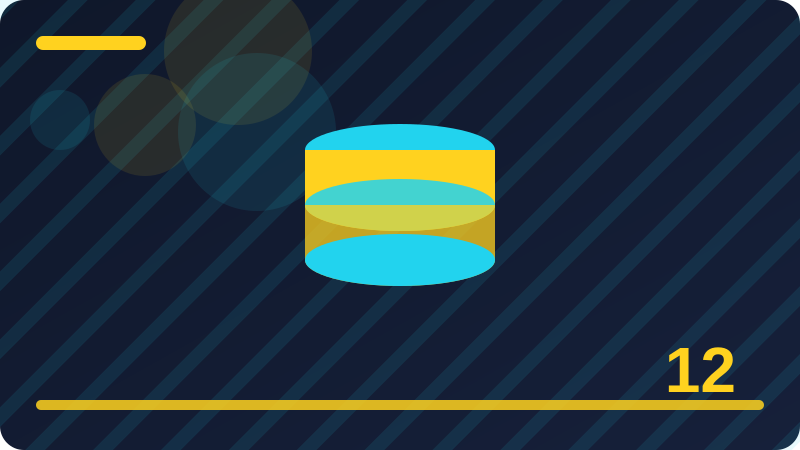

Chapter 12: Maps: Keys and Lookup Tables

Section 1: Map Basics and Key Value Pairs
This section explores map basics and key value pairs in Go, and it builds on the ideas you have already practised in earlier chapters. Your goal is not to memorise a definition, but to recognise when map basics and key value pairs is the right tool and to use it confidently in a small program. Start by picturing a concrete example of map basics and key value pairs, because a concrete example makes the abstract rule much easier to remember. As you read, keep asking what changes, what stays the same, and what the program should do when the input is unusual.
The core idea behind map basics and key value pairs is straightforward once you see it in action, and the examples in this section show that idea step by step. Notice how each part of the example connects to the next, and try to predict the result before you look at the output. If your prediction is wrong, that is useful information, because it shows exactly which assumption needs to be corrected. Go is designed to make this kind of careful reasoning visible, so the code and the result should agree once you understand the rule.
Working with map basics and key value pairs becomes easier with practice. Write a comment only when it explains why, because the code itself should already show what is happening. Refactor in small steps, running the program after each step, so you always know which change caused a problem. Errors deserve a plan, and in Go that plan usually starts with checking the returned error value explicitly. Consistency helps teams, so follow the formatting that gofmt produces and keep your style steady across files.
When you use map basics and key value pairs in your own code, check your work in three ways: does it handle the normal case, does it handle an empty or edge case, and can another person read it without extra explanation? If any answer is no, simplify the code or add a clearer name before you move on. That habit will serve you in every later chapter, because larger programs are simply these small ideas combined with care.
A loop should have a clear stopping condition, and you should be able to say in plain words when it ends. Data shapes drive program design, so choose the shape that matches how you will actually use the data. Practice by changing one number, one name, or one condition, then predict the output before you run the code. Go programs are built from packages, and understanding how values move between functions is a core skill. Do not rush past a concept that feels fuzzy, because later chapters build directly on the ideas in this one. Test your understanding by explaining the idea aloud, as if you were teaching it to a friend who is new to Go. Simple examples reveal the rule, while complicated examples often hide it behind unrelated details.
package main
import "fmt"
func main() {
// Chapter 12, section 1: Map Basics and Key Value Pairs
fmt.Println("Practising section 1 of chapter 12")
}Check: In your own words, explain map basics and key value pairs and give one small Go example where you would use it.
Section 2: Declaring a Map in Go
This section explores declaring a map in go in Go, and it builds on the ideas you have already practised in earlier chapters. Your goal is not to memorise a definition, but to recognise when declaring a map in go is the right tool and to use it confidently in a small program. Start by picturing a concrete example of declaring a map in go, because a concrete example makes the abstract rule much easier to remember. As you read, keep asking what changes, what stays the same, and what the program should do when the input is unusual.
The core idea behind declaring a map in go is straightforward once you see it in action, and the examples in this section show that idea step by step. Notice how each part of the example connects to the next, and try to predict the result before you look at the output. If your prediction is wrong, that is useful information, because it shows exactly which assumption needs to be corrected. Go is designed to make this kind of careful reasoning visible, so the code and the result should agree once you understand the rule.
Working with declaring a map in go becomes easier with practice. Go programs are built from packages, and understanding how values move between functions is a core skill. Do not rush past a concept that feels fuzzy, because later chapters build directly on the ideas in this one. Test your understanding by explaining the idea aloud, as if you were teaching it to a friend who is new to Go. Simple examples reveal the rule, while complicated examples often hide it behind unrelated details.
When you use declaring a map in go in your own code, check your work in three ways: does it handle the normal case, does it handle an empty or edge case, and can another person read it without extra explanation? If any answer is no, simplify the code or add a clearer name before you move on. That habit will serve you in every later chapter, because larger programs are simply these small ideas combined with care.
When two approaches both work, prefer the one that is easier to read, test, and change later. The Go tool chain gives fast feedback, so use go run and go vet as part of your regular learning habit. Pay attention to zero values, because Go gives every variable a sensible starting value even before you assign one. Break a hard problem into smaller pieces, solve each piece, and then combine the pieces into a working whole. Reading other people's Go code, slowly and with notes, is one of the fastest ways to grow your judgement. Avoid repeating yourself without a reason, because a repeated pattern is often a sign that a helper is waiting to be written. Go rewards clear thinking, so start by stating what the value should be before you write any code.
package main
import "fmt"
func main() {
// Chapter 12, section 2: Declaring a Map in Go
fmt.Println("Practising section 2 of chapter 12")
}Check: In your own words, explain declaring a map in go and give one small Go example where you would use it.
Section 3: Map Literals
This section explores map literals in Go, and it builds on the ideas you have already practised in earlier chapters. Your goal is not to memorise a definition, but to recognise when map literals is the right tool and to use it confidently in a small program. Start by picturing a concrete example of map literals, because a concrete example makes the abstract rule much easier to remember. As you read, keep asking what changes, what stays the same, and what the program should do when the input is unusual.
The core idea behind map literals is straightforward once you see it in action, and the examples in this section show that idea step by step. Notice how each part of the example connects to the next, and try to predict the result before you look at the output. If your prediction is wrong, that is useful information, because it shows exactly which assumption needs to be corrected. Go is designed to make this kind of careful reasoning visible, so the code and the result should agree once you understand the rule.
Working with map literals becomes easier with practice. Break a hard problem into smaller pieces, solve each piece, and then combine the pieces into a working whole. Reading other people's Go code, slowly and with notes, is one of the fastest ways to grow your judgement. Avoid repeating yourself without a reason, because a repeated pattern is often a sign that a helper is waiting to be written. Go rewards clear thinking, so start by stating what the value should be before you write any code.
When you use map literals in your own code, check your work in three ways: does it handle the normal case, does it handle an empty or edge case, and can another person read it without extra explanation? If any answer is no, simplify the code or add a clearer name before you move on. That habit will serve you in every later chapter, because larger programs are simply these small ideas combined with care.
Small programs teach faster than large ones, because you can change one idea at a time and watch the result. When the compiler complains, read the message slowly, because it usually points at the exact line that needs attention. Run your program often while you learn, rather than writing a long file and testing it only at the end. Good Go code favours readability over cleverness, and a future reader should follow your logic without a puzzle. Try the idea in the playground or in a tiny main function before you use it inside a bigger project. Name your variables for what they hold, not for their type, so the code explains itself as you read it. If a result surprises you, print the intermediate values, because the surprise usually hides one step earlier. Compare your expectation with the output, and treat any mismatch as a useful clue rather than a failure.
package main
import "fmt"
func main() {
// Chapter 12, section 3: Map Literals
fmt.Println("Practising section 3 of chapter 12")
}Check: In your own words, explain map literals and give one small Go example where you would use it.
Section 4: Making a Map with make
This section explores making a map with make in Go, and it builds on the ideas you have already practised in earlier chapters. Your goal is not to memorise a definition, but to recognise when making a map with make is the right tool and to use it confidently in a small program. Start by picturing a concrete example of making a map with make, because a concrete example makes the abstract rule much easier to remember. As you read, keep asking what changes, what stays the same, and what the program should do when the input is unusual.
The core idea behind making a map with make is straightforward once you see it in action, and the examples in this section show that idea step by step. Notice how each part of the example connects to the next, and try to predict the result before you look at the output. If your prediction is wrong, that is useful information, because it shows exactly which assumption needs to be corrected. Go is designed to make this kind of careful reasoning visible, so the code and the result should agree once you understand the rule.
Working with making a map with make becomes easier with practice. Good Go code favours readability over cleverness, and a future reader should follow your logic without a puzzle. Try the idea in the playground or in a tiny main function before you use it inside a bigger project. Name your variables for what they hold, not for their type, so the code explains itself as you read it. If a result surprises you, print the intermediate values, because the surprise usually hides one step earlier.
When you use making a map with make in your own code, check your work in three ways: does it handle the normal case, does it handle an empty or edge case, and can another person read it without extra explanation? If any answer is no, simplify the code or add a clearer name before you move on. That habit will serve you in every later chapter, because larger programs are simply these small ideas combined with care.
Compare your expectation with the output, and treat any mismatch as a useful clue rather than a failure. Keep functions short and focused, so each one does a single job that you can test on its own. Go values are copied in many situations, so think carefully about when a copy is helpful and when sharing is better. The standard library is your friend, and reading its documentation often answers a question faster than guessing. Edge cases matter, so test empty inputs, single items, and the largest case you expect to handle. Write a comment only when it explains why, because the code itself should already show what is happening. Refactor in small steps, running the program after each step, so you always know which change caused a problem. Errors deserve a plan, and in Go that plan usually starts with checking the returned error value explicitly.
package main
import "fmt"
func main() {
// Chapter 12, section 4: Making a Map with make
fmt.Println("Practising section 4 of chapter 12")
}Check: In your own words, explain making a map with make and give one small Go example where you would use it.
Section 5: Nil Maps and Writes
This section explores nil maps and writes in Go, and it builds on the ideas you have already practised in earlier chapters. Your goal is not to memorise a definition, but to recognise when nil maps and writes is the right tool and to use it confidently in a small program. Start by picturing a concrete example of nil maps and writes, because a concrete example makes the abstract rule much easier to remember. As you read, keep asking what changes, what stays the same, and what the program should do when the input is unusual.
The core idea behind nil maps and writes is straightforward once you see it in action, and the examples in this section show that idea step by step. Notice how each part of the example connects to the next, and try to predict the result before you look at the output. If your prediction is wrong, that is useful information, because it shows exactly which assumption needs to be corrected. Go is designed to make this kind of careful reasoning visible, so the code and the result should agree once you understand the rule.
Working with nil maps and writes becomes easier with practice. The standard library is your friend, and reading its documentation often answers a question faster than guessing. Edge cases matter, so test empty inputs, single items, and the largest case you expect to handle. Write a comment only when it explains why, because the code itself should already show what is happening. Refactor in small steps, running the program after each step, so you always know which change caused a problem.
When you use nil maps and writes in your own code, check your work in three ways: does it handle the normal case, does it handle an empty or edge case, and can another person read it without extra explanation? If any answer is no, simplify the code or add a clearer name before you move on. That habit will serve you in every later chapter, because larger programs are simply these small ideas combined with care.
Errors deserve a plan, and in Go that plan usually starts with checking the returned error value explicitly. Consistency helps teams, so follow the formatting that gofmt produces and keep your style steady across files. A loop should have a clear stopping condition, and you should be able to say in plain words when it ends. Data shapes drive program design, so choose the shape that matches how you will actually use the data. Practice by changing one number, one name, or one condition, then predict the output before you run the code. Go programs are built from packages, and understanding how values move between functions is a core skill. Do not rush past a concept that feels fuzzy, because later chapters build directly on the ideas in this one. Test your understanding by explaining the idea aloud, as if you were teaching it to a friend who is new to Go.
package main
import "fmt"
func main() {
// Chapter 12, section 5: Nil Maps and Writes
fmt.Println("Practising section 5 of chapter 12")
}Check: In your own words, explain nil maps and writes and give one small Go example where you would use it.
Section 6: Adding Entries to a Map
This section explores adding entries to a map in Go, and it builds on the ideas you have already practised in earlier chapters. Your goal is not to memorise a definition, but to recognise when adding entries to a map is the right tool and to use it confidently in a small program. Start by picturing a concrete example of adding entries to a map, because a concrete example makes the abstract rule much easier to remember. As you read, keep asking what changes, what stays the same, and what the program should do when the input is unusual.
The core idea behind adding entries to a map is straightforward once you see it in action, and the examples in this section show that idea step by step. Notice how each part of the example connects to the next, and try to predict the result before you look at the output. If your prediction is wrong, that is useful information, because it shows exactly which assumption needs to be corrected. Go is designed to make this kind of careful reasoning visible, so the code and the result should agree once you understand the rule.
Working with adding entries to a map becomes easier with practice. Data shapes drive program design, so choose the shape that matches how you will actually use the data. Practice by changing one number, one name, or one condition, then predict the output before you run the code. Go programs are built from packages, and understanding how values move between functions is a core skill. Do not rush past a concept that feels fuzzy, because later chapters build directly on the ideas in this one.
When you use adding entries to a map in your own code, check your work in three ways: does it handle the normal case, does it handle an empty or edge case, and can another person read it without extra explanation? If any answer is no, simplify the code or add a clearer name before you move on. That habit will serve you in every later chapter, because larger programs are simply these small ideas combined with care.
Test your understanding by explaining the idea aloud, as if you were teaching it to a friend who is new to Go. Simple examples reveal the rule, while complicated examples often hide it behind unrelated details. When two approaches both work, prefer the one that is easier to read, test, and change later. The Go tool chain gives fast feedback, so use go run and go vet as part of your regular learning habit. Pay attention to zero values, because Go gives every variable a sensible starting value even before you assign one. Break a hard problem into smaller pieces, solve each piece, and then combine the pieces into a working whole. Reading other people's Go code, slowly and with notes, is one of the fastest ways to grow your judgement. Avoid repeating yourself without a reason, because a repeated pattern is often a sign that a helper is waiting to be written.
package main
import "fmt"
func main() {
// Chapter 12, section 6: Adding Entries to a Map
fmt.Println("Practising section 6 of chapter 12")
}Check: In your own words, explain adding entries to a map and give one small Go example where you would use it.
Section 7: Reading a Value from a Map
This section explores reading a value from a map in Go, and it builds on the ideas you have already practised in earlier chapters. Your goal is not to memorise a definition, but to recognise when reading a value from a map is the right tool and to use it confidently in a small program. Start by picturing a concrete example of reading a value from a map, because a concrete example makes the abstract rule much easier to remember. As you read, keep asking what changes, what stays the same, and what the program should do when the input is unusual.
The core idea behind reading a value from a map is straightforward once you see it in action, and the examples in this section show that idea step by step. Notice how each part of the example connects to the next, and try to predict the result before you look at the output. If your prediction is wrong, that is useful information, because it shows exactly which assumption needs to be corrected. Go is designed to make this kind of careful reasoning visible, so the code and the result should agree once you understand the rule.
Working with reading a value from a map becomes easier with practice. The Go tool chain gives fast feedback, so use go run and go vet as part of your regular learning habit. Pay attention to zero values, because Go gives every variable a sensible starting value even before you assign one. Break a hard problem into smaller pieces, solve each piece, and then combine the pieces into a working whole. Reading other people's Go code, slowly and with notes, is one of the fastest ways to grow your judgement.
When you use reading a value from a map in your own code, check your work in three ways: does it handle the normal case, does it handle an empty or edge case, and can another person read it without extra explanation? If any answer is no, simplify the code or add a clearer name before you move on. That habit will serve you in every later chapter, because larger programs are simply these small ideas combined with care.
Avoid repeating yourself without a reason, because a repeated pattern is often a sign that a helper is waiting to be written. Go rewards clear thinking, so start by stating what the value should be before you write any code. Small programs teach faster than large ones, because you can change one idea at a time and watch the result. When the compiler complains, read the message slowly, because it usually points at the exact line that needs attention. Run your program often while you learn, rather than writing a long file and testing it only at the end. Good Go code favours readability over cleverness, and a future reader should follow your logic without a puzzle. Try the idea in the playground or in a tiny main function before you use it inside a bigger project.
package main
import "fmt"
func main() {
// Chapter 12, section 7: Reading a Value from a Map
fmt.Println("Practising section 7 of chapter 12")
}Check: In your own words, explain reading a value from a map and give one small Go example where you would use it.
Section 8: The Comma Ok Idiom
This section explores the comma ok idiom in Go, and it builds on the ideas you have already practised in earlier chapters. Your goal is not to memorise a definition, but to recognise when the comma ok idiom is the right tool and to use it confidently in a small program. Start by picturing a concrete example of the comma ok idiom, because a concrete example makes the abstract rule much easier to remember. As you read, keep asking what changes, what stays the same, and what the program should do when the input is unusual.
The core idea behind the comma ok idiom is straightforward once you see it in action, and the examples in this section show that idea step by step. Notice how each part of the example connects to the next, and try to predict the result before you look at the output. If your prediction is wrong, that is useful information, because it shows exactly which assumption needs to be corrected. Go is designed to make this kind of careful reasoning visible, so the code and the result should agree once you understand the rule.
Working with the comma ok idiom becomes easier with practice. When the compiler complains, read the message slowly, because it usually points at the exact line that needs attention. Run your program often while you learn, rather than writing a long file and testing it only at the end. Good Go code favours readability over cleverness, and a future reader should follow your logic without a puzzle. Try the idea in the playground or in a tiny main function before you use it inside a bigger project.
When you use the comma ok idiom in your own code, check your work in three ways: does it handle the normal case, does it handle an empty or edge case, and can another person read it without extra explanation? If any answer is no, simplify the code or add a clearer name before you move on. That habit will serve you in every later chapter, because larger programs are simply these small ideas combined with care.
Name your variables for what they hold, not for their type, so the code explains itself as you read it. If a result surprises you, print the intermediate values, because the surprise usually hides one step earlier. Compare your expectation with the output, and treat any mismatch as a useful clue rather than a failure. Keep functions short and focused, so each one does a single job that you can test on its own. Go values are copied in many situations, so think carefully about when a copy is helpful and when sharing is better. The standard library is your friend, and reading its documentation often answers a question faster than guessing. Edge cases matter, so test empty inputs, single items, and the largest case you expect to handle. Write a comment only when it explains why, because the code itself should already show what is happening.
package main
import "fmt"
func main() {
// Chapter 12, section 8: The Comma Ok Idiom
fmt.Println("Practising section 8 of chapter 12")
}Check: In your own words, explain the comma ok idiom and give one small Go example where you would use it.
Section 9: Updating a Map Entry
This section explores updating a map entry in Go, and it builds on the ideas you have already practised in earlier chapters. Your goal is not to memorise a definition, but to recognise when updating a map entry is the right tool and to use it confidently in a small program. Start by picturing a concrete example of updating a map entry, because a concrete example makes the abstract rule much easier to remember. As you read, keep asking what changes, what stays the same, and what the program should do when the input is unusual.
The core idea behind updating a map entry is straightforward once you see it in action, and the examples in this section show that idea step by step. Notice how each part of the example connects to the next, and try to predict the result before you look at the output. If your prediction is wrong, that is useful information, because it shows exactly which assumption needs to be corrected. Go is designed to make this kind of careful reasoning visible, so the code and the result should agree once you understand the rule.
Working with updating a map entry becomes easier with practice. Keep functions short and focused, so each one does a single job that you can test on its own. Go values are copied in many situations, so think carefully about when a copy is helpful and when sharing is better. The standard library is your friend, and reading its documentation often answers a question faster than guessing. Edge cases matter, so test empty inputs, single items, and the largest case you expect to handle.
When you use updating a map entry in your own code, check your work in three ways: does it handle the normal case, does it handle an empty or edge case, and can another person read it without extra explanation? If any answer is no, simplify the code or add a clearer name before you move on. That habit will serve you in every later chapter, because larger programs are simply these small ideas combined with care.
Write a comment only when it explains why, because the code itself should already show what is happening. Refactor in small steps, running the program after each step, so you always know which change caused a problem. Errors deserve a plan, and in Go that plan usually starts with checking the returned error value explicitly. Consistency helps teams, so follow the formatting that gofmt produces and keep your style steady across files. A loop should have a clear stopping condition, and you should be able to say in plain words when it ends. Data shapes drive program design, so choose the shape that matches how you will actually use the data. Practice by changing one number, one name, or one condition, then predict the output before you run the code. Go programs are built from packages, and understanding how values move between functions is a core skill.
package main
import "fmt"
func main() {
// Chapter 12, section 9: Updating a Map Entry
fmt.Println("Practising section 9 of chapter 12")
}Check: In your own words, explain updating a map entry and give one small Go example where you would use it.
Section 10: Deleting a Key
This section explores deleting a key in Go, and it builds on the ideas you have already practised in earlier chapters. Your goal is not to memorise a definition, but to recognise when deleting a key is the right tool and to use it confidently in a small program. Start by picturing a concrete example of deleting a key, because a concrete example makes the abstract rule much easier to remember. As you read, keep asking what changes, what stays the same, and what the program should do when the input is unusual.
The core idea behind deleting a key is straightforward once you see it in action, and the examples in this section show that idea step by step. Notice how each part of the example connects to the next, and try to predict the result before you look at the output. If your prediction is wrong, that is useful information, because it shows exactly which assumption needs to be corrected. Go is designed to make this kind of careful reasoning visible, so the code and the result should agree once you understand the rule.
Working with deleting a key becomes easier with practice. Consistency helps teams, so follow the formatting that gofmt produces and keep your style steady across files. A loop should have a clear stopping condition, and you should be able to say in plain words when it ends. Data shapes drive program design, so choose the shape that matches how you will actually use the data. Practice by changing one number, one name, or one condition, then predict the output before you run the code.
When you use deleting a key in your own code, check your work in three ways: does it handle the normal case, does it handle an empty or edge case, and can another person read it without extra explanation? If any answer is no, simplify the code or add a clearer name before you move on. That habit will serve you in every later chapter, because larger programs are simply these small ideas combined with care.
Go programs are built from packages, and understanding how values move between functions is a core skill. Do not rush past a concept that feels fuzzy, because later chapters build directly on the ideas in this one. Test your understanding by explaining the idea aloud, as if you were teaching it to a friend who is new to Go. Simple examples reveal the rule, while complicated examples often hide it behind unrelated details. When two approaches both work, prefer the one that is easier to read, test, and change later. The Go tool chain gives fast feedback, so use go run and go vet as part of your regular learning habit. Pay attention to zero values, because Go gives every variable a sensible starting value even before you assign one. Break a hard problem into smaller pieces, solve each piece, and then combine the pieces into a working whole.
package main
import "fmt"
func main() {
// Chapter 12, section 10: Deleting a Key
fmt.Println("Practising section 10 of chapter 12")
}Check: In your own words, explain deleting a key and give one small Go example where you would use it.
Section 11: Checking Whether a Key Exists
This section explores checking whether a key exists in Go, and it builds on the ideas you have already practised in earlier chapters. Your goal is not to memorise a definition, but to recognise when checking whether a key exists is the right tool and to use it confidently in a small program. Start by picturing a concrete example of checking whether a key exists, because a concrete example makes the abstract rule much easier to remember. As you read, keep asking what changes, what stays the same, and what the program should do when the input is unusual.
The core idea behind checking whether a key exists is straightforward once you see it in action, and the examples in this section show that idea step by step. Notice how each part of the example connects to the next, and try to predict the result before you look at the output. If your prediction is wrong, that is useful information, because it shows exactly which assumption needs to be corrected. Go is designed to make this kind of careful reasoning visible, so the code and the result should agree once you understand the rule.
Working with checking whether a key exists becomes easier with practice. Simple examples reveal the rule, while complicated examples often hide it behind unrelated details. When two approaches both work, prefer the one that is easier to read, test, and change later. The Go tool chain gives fast feedback, so use go run and go vet as part of your regular learning habit. Pay attention to zero values, because Go gives every variable a sensible starting value even before you assign one.
When you use checking whether a key exists in your own code, check your work in three ways: does it handle the normal case, does it handle an empty or edge case, and can another person read it without extra explanation? If any answer is no, simplify the code or add a clearer name before you move on. That habit will serve you in every later chapter, because larger programs are simply these small ideas combined with care.
Break a hard problem into smaller pieces, solve each piece, and then combine the pieces into a working whole. Reading other people's Go code, slowly and with notes, is one of the fastest ways to grow your judgement. Avoid repeating yourself without a reason, because a repeated pattern is often a sign that a helper is waiting to be written. Go rewards clear thinking, so start by stating what the value should be before you write any code. Small programs teach faster than large ones, because you can change one idea at a time and watch the result. When the compiler complains, read the message slowly, because it usually points at the exact line that needs attention. Run your program often while you learn, rather than writing a long file and testing it only at the end.
package main
import "fmt"
func main() {
// Chapter 12, section 11: Checking Whether a Key Exists
fmt.Println("Practising section 11 of chapter 12")
}Check: In your own words, explain checking whether a key exists and give one small Go example where you would use it.
Section 12: Iterating a Map with range
This section explores iterating a map with range in Go, and it builds on the ideas you have already practised in earlier chapters. Your goal is not to memorise a definition, but to recognise when iterating a map with range is the right tool and to use it confidently in a small program. Start by picturing a concrete example of iterating a map with range, because a concrete example makes the abstract rule much easier to remember. As you read, keep asking what changes, what stays the same, and what the program should do when the input is unusual.
The core idea behind iterating a map with range is straightforward once you see it in action, and the examples in this section show that idea step by step. Notice how each part of the example connects to the next, and try to predict the result before you look at the output. If your prediction is wrong, that is useful information, because it shows exactly which assumption needs to be corrected. Go is designed to make this kind of careful reasoning visible, so the code and the result should agree once you understand the rule.
Working with iterating a map with range becomes easier with practice. Go rewards clear thinking, so start by stating what the value should be before you write any code. Small programs teach faster than large ones, because you can change one idea at a time and watch the result. When the compiler complains, read the message slowly, because it usually points at the exact line that needs attention. Run your program often while you learn, rather than writing a long file and testing it only at the end.
When you use iterating a map with range in your own code, check your work in three ways: does it handle the normal case, does it handle an empty or edge case, and can another person read it without extra explanation? If any answer is no, simplify the code or add a clearer name before you move on. That habit will serve you in every later chapter, because larger programs are simply these small ideas combined with care.
Good Go code favours readability over cleverness, and a future reader should follow your logic without a puzzle. Try the idea in the playground or in a tiny main function before you use it inside a bigger project. Name your variables for what they hold, not for their type, so the code explains itself as you read it. If a result surprises you, print the intermediate values, because the surprise usually hides one step earlier. Compare your expectation with the output, and treat any mismatch as a useful clue rather than a failure. Keep functions short and focused, so each one does a single job that you can test on its own. Go values are copied in many situations, so think carefully about when a copy is helpful and when sharing is better.
package main
import "fmt"
func main() {
// Chapter 12, section 12: Iterating a Map with range
fmt.Println("Practising section 12 of chapter 12")
}Check: In your own words, explain iterating a map with range and give one small Go example where you would use it.
Section 13: Map Iteration Order Is Random
This section explores map iteration order is random in Go, and it builds on the ideas you have already practised in earlier chapters. Your goal is not to memorise a definition, but to recognise when map iteration order is random is the right tool and to use it confidently in a small program. Start by picturing a concrete example of map iteration order is random, because a concrete example makes the abstract rule much easier to remember. As you read, keep asking what changes, what stays the same, and what the program should do when the input is unusual.
The core idea behind map iteration order is random is straightforward once you see it in action, and the examples in this section show that idea step by step. Notice how each part of the example connects to the next, and try to predict the result before you look at the output. If your prediction is wrong, that is useful information, because it shows exactly which assumption needs to be corrected. Go is designed to make this kind of careful reasoning visible, so the code and the result should agree once you understand the rule.
Working with map iteration order is random becomes easier with practice. If a result surprises you, print the intermediate values, because the surprise usually hides one step earlier. Compare your expectation with the output, and treat any mismatch as a useful clue rather than a failure. Keep functions short and focused, so each one does a single job that you can test on its own. Go values are copied in many situations, so think carefully about when a copy is helpful and when sharing is better.
When you use map iteration order is random in your own code, check your work in three ways: does it handle the normal case, does it handle an empty or edge case, and can another person read it without extra explanation? If any answer is no, simplify the code or add a clearer name before you move on. That habit will serve you in every later chapter, because larger programs are simply these small ideas combined with care.
The standard library is your friend, and reading its documentation often answers a question faster than guessing. Edge cases matter, so test empty inputs, single items, and the largest case you expect to handle. Write a comment only when it explains why, because the code itself should already show what is happening. Refactor in small steps, running the program after each step, so you always know which change caused a problem. Errors deserve a plan, and in Go that plan usually starts with checking the returned error value explicitly. Consistency helps teams, so follow the formatting that gofmt produces and keep your style steady across files. A loop should have a clear stopping condition, and you should be able to say in plain words when it ends. Data shapes drive program design, so choose the shape that matches how you will actually use the data.
package main
import "fmt"
func main() {
// Chapter 12, section 13: Map Iteration Order Is Random
fmt.Println("Practising section 13 of chapter 12")
}Check: In your own words, explain map iteration order is random and give one small Go example where you would use it.
Section 14: Counting with a Map
This section explores counting with a map in Go, and it builds on the ideas you have already practised in earlier chapters. Your goal is not to memorise a definition, but to recognise when counting with a map is the right tool and to use it confidently in a small program. Start by picturing a concrete example of counting with a map, because a concrete example makes the abstract rule much easier to remember. As you read, keep asking what changes, what stays the same, and what the program should do when the input is unusual.
The core idea behind counting with a map is straightforward once you see it in action, and the examples in this section show that idea step by step. Notice how each part of the example connects to the next, and try to predict the result before you look at the output. If your prediction is wrong, that is useful information, because it shows exactly which assumption needs to be corrected. Go is designed to make this kind of careful reasoning visible, so the code and the result should agree once you understand the rule.
Working with counting with a map becomes easier with practice. Refactor in small steps, running the program after each step, so you always know which change caused a problem. Errors deserve a plan, and in Go that plan usually starts with checking the returned error value explicitly. Consistency helps teams, so follow the formatting that gofmt produces and keep your style steady across files. A loop should have a clear stopping condition, and you should be able to say in plain words when it ends.
When you use counting with a map in your own code, check your work in three ways: does it handle the normal case, does it handle an empty or edge case, and can another person read it without extra explanation? If any answer is no, simplify the code or add a clearer name before you move on. That habit will serve you in every later chapter, because larger programs are simply these small ideas combined with care.
Data shapes drive program design, so choose the shape that matches how you will actually use the data. Practice by changing one number, one name, or one condition, then predict the output before you run the code. Go programs are built from packages, and understanding how values move between functions is a core skill. Do not rush past a concept that feels fuzzy, because later chapters build directly on the ideas in this one. Test your understanding by explaining the idea aloud, as if you were teaching it to a friend who is new to Go. Simple examples reveal the rule, while complicated examples often hide it behind unrelated details. When two approaches both work, prefer the one that is easier to read, test, and change later. The Go tool chain gives fast feedback, so use go run and go vet as part of your regular learning habit.
package main
import "fmt"
func main() {
// Chapter 12, section 14: Counting with a Map
fmt.Println("Practising section 14 of chapter 12")
}Check: In your own words, explain counting with a map and give one small Go example where you would use it.
Section 15: Grouping Items with a Map
This section explores grouping items with a map in Go, and it builds on the ideas you have already practised in earlier chapters. Your goal is not to memorise a definition, but to recognise when grouping items with a map is the right tool and to use it confidently in a small program. Start by picturing a concrete example of grouping items with a map, because a concrete example makes the abstract rule much easier to remember. As you read, keep asking what changes, what stays the same, and what the program should do when the input is unusual.
The core idea behind grouping items with a map is straightforward once you see it in action, and the examples in this section show that idea step by step. Notice how each part of the example connects to the next, and try to predict the result before you look at the output. If your prediction is wrong, that is useful information, because it shows exactly which assumption needs to be corrected. Go is designed to make this kind of careful reasoning visible, so the code and the result should agree once you understand the rule.
Working with grouping items with a map becomes easier with practice. Do not rush past a concept that feels fuzzy, because later chapters build directly on the ideas in this one. Test your understanding by explaining the idea aloud, as if you were teaching it to a friend who is new to Go. Simple examples reveal the rule, while complicated examples often hide it behind unrelated details. When two approaches both work, prefer the one that is easier to read, test, and change later.
When you use grouping items with a map in your own code, check your work in three ways: does it handle the normal case, does it handle an empty or edge case, and can another person read it without extra explanation? If any answer is no, simplify the code or add a clearer name before you move on. That habit will serve you in every later chapter, because larger programs are simply these small ideas combined with care.
The Go tool chain gives fast feedback, so use go run and go vet as part of your regular learning habit. Pay attention to zero values, because Go gives every variable a sensible starting value even before you assign one. Break a hard problem into smaller pieces, solve each piece, and then combine the pieces into a working whole. Reading other people's Go code, slowly and with notes, is one of the fastest ways to grow your judgement. Avoid repeating yourself without a reason, because a repeated pattern is often a sign that a helper is waiting to be written. Go rewards clear thinking, so start by stating what the value should be before you write any code. Small programs teach faster than large ones, because you can change one idea at a time and watch the result.
package main
import "fmt"
func main() {
// Chapter 12, section 15: Grouping Items with a Map
fmt.Println("Practising section 15 of chapter 12")
}Check: In your own words, explain grouping items with a map and give one small Go example where you would use it.
Section 16: Maps of Strings to Numbers
This section explores maps of strings to numbers in Go, and it builds on the ideas you have already practised in earlier chapters. Your goal is not to memorise a definition, but to recognise when maps of strings to numbers is the right tool and to use it confidently in a small program. Start by picturing a concrete example of maps of strings to numbers, because a concrete example makes the abstract rule much easier to remember. As you read, keep asking what changes, what stays the same, and what the program should do when the input is unusual.
The core idea behind maps of strings to numbers is straightforward once you see it in action, and the examples in this section show that idea step by step. Notice how each part of the example connects to the next, and try to predict the result before you look at the output. If your prediction is wrong, that is useful information, because it shows exactly which assumption needs to be corrected. Go is designed to make this kind of careful reasoning visible, so the code and the result should agree once you understand the rule.
Working with maps of strings to numbers becomes easier with practice. Reading other people's Go code, slowly and with notes, is one of the fastest ways to grow your judgement. Avoid repeating yourself without a reason, because a repeated pattern is often a sign that a helper is waiting to be written. Go rewards clear thinking, so start by stating what the value should be before you write any code. Small programs teach faster than large ones, because you can change one idea at a time and watch the result.
When you use maps of strings to numbers in your own code, check your work in three ways: does it handle the normal case, does it handle an empty or edge case, and can another person read it without extra explanation? If any answer is no, simplify the code or add a clearer name before you move on. That habit will serve you in every later chapter, because larger programs are simply these small ideas combined with care.
When the compiler complains, read the message slowly, because it usually points at the exact line that needs attention. Run your program often while you learn, rather than writing a long file and testing it only at the end. Good Go code favours readability over cleverness, and a future reader should follow your logic without a puzzle. Try the idea in the playground or in a tiny main function before you use it inside a bigger project. Name your variables for what they hold, not for their type, so the code explains itself as you read it. If a result surprises you, print the intermediate values, because the surprise usually hides one step earlier. Compare your expectation with the output, and treat any mismatch as a useful clue rather than a failure.
package main
import "fmt"
func main() {
// Chapter 12, section 16: Maps of Strings to Numbers
fmt.Println("Practising section 16 of chapter 12")
}Check: In your own words, explain maps of strings to numbers and give one small Go example where you would use it.
Section 17: Maps of Strings to Strings
This section explores maps of strings to strings in Go, and it builds on the ideas you have already practised in earlier chapters. Your goal is not to memorise a definition, but to recognise when maps of strings to strings is the right tool and to use it confidently in a small program. Start by picturing a concrete example of maps of strings to strings, because a concrete example makes the abstract rule much easier to remember. As you read, keep asking what changes, what stays the same, and what the program should do when the input is unusual.
The core idea behind maps of strings to strings is straightforward once you see it in action, and the examples in this section show that idea step by step. Notice how each part of the example connects to the next, and try to predict the result before you look at the output. If your prediction is wrong, that is useful information, because it shows exactly which assumption needs to be corrected. Go is designed to make this kind of careful reasoning visible, so the code and the result should agree once you understand the rule.
Working with maps of strings to strings becomes easier with practice. Try the idea in the playground or in a tiny main function before you use it inside a bigger project. Name your variables for what they hold, not for their type, so the code explains itself as you read it. If a result surprises you, print the intermediate values, because the surprise usually hides one step earlier. Compare your expectation with the output, and treat any mismatch as a useful clue rather than a failure.
When you use maps of strings to strings in your own code, check your work in three ways: does it handle the normal case, does it handle an empty or edge case, and can another person read it without extra explanation? If any answer is no, simplify the code or add a clearer name before you move on. That habit will serve you in every later chapter, because larger programs are simply these small ideas combined with care.
Keep functions short and focused, so each one does a single job that you can test on its own. Go values are copied in many situations, so think carefully about when a copy is helpful and when sharing is better. The standard library is your friend, and reading its documentation often answers a question faster than guessing. Edge cases matter, so test empty inputs, single items, and the largest case you expect to handle. Write a comment only when it explains why, because the code itself should already show what is happening. Refactor in small steps, running the program after each step, so you always know which change caused a problem. Errors deserve a plan, and in Go that plan usually starts with checking the returned error value explicitly. Consistency helps teams, so follow the formatting that gofmt produces and keep your style steady across files.
package main
import "fmt"
func main() {
// Chapter 12, section 17: Maps of Strings to Strings
fmt.Println("Practising section 17 of chapter 12")
}Check: In your own words, explain maps of strings to strings and give one small Go example where you would use it.
Section 18: Maps of Strings to Slices
This section explores maps of strings to slices in Go, and it builds on the ideas you have already practised in earlier chapters. Your goal is not to memorise a definition, but to recognise when maps of strings to slices is the right tool and to use it confidently in a small program. Start by picturing a concrete example of maps of strings to slices, because a concrete example makes the abstract rule much easier to remember. As you read, keep asking what changes, what stays the same, and what the program should do when the input is unusual.
The core idea behind maps of strings to slices is straightforward once you see it in action, and the examples in this section show that idea step by step. Notice how each part of the example connects to the next, and try to predict the result before you look at the output. If your prediction is wrong, that is useful information, because it shows exactly which assumption needs to be corrected. Go is designed to make this kind of careful reasoning visible, so the code and the result should agree once you understand the rule.
Working with maps of strings to slices becomes easier with practice. Edge cases matter, so test empty inputs, single items, and the largest case you expect to handle. Write a comment only when it explains why, because the code itself should already show what is happening. Refactor in small steps, running the program after each step, so you always know which change caused a problem. Errors deserve a plan, and in Go that plan usually starts with checking the returned error value explicitly.
When you use maps of strings to slices in your own code, check your work in three ways: does it handle the normal case, does it handle an empty or edge case, and can another person read it without extra explanation? If any answer is no, simplify the code or add a clearer name before you move on. That habit will serve you in every later chapter, because larger programs are simply these small ideas combined with care.
Consistency helps teams, so follow the formatting that gofmt produces and keep your style steady across files. A loop should have a clear stopping condition, and you should be able to say in plain words when it ends. Data shapes drive program design, so choose the shape that matches how you will actually use the data. Practice by changing one number, one name, or one condition, then predict the output before you run the code. Go programs are built from packages, and understanding how values move between functions is a core skill. Do not rush past a concept that feels fuzzy, because later chapters build directly on the ideas in this one. Test your understanding by explaining the idea aloud, as if you were teaching it to a friend who is new to Go. Simple examples reveal the rule, while complicated examples often hide it behind unrelated details.
package main
import "fmt"
func main() {
// Chapter 12, section 18: Maps of Strings to Slices
fmt.Println("Practising section 18 of chapter 12")
}Check: In your own words, explain maps of strings to slices and give one small Go example where you would use it.
Section 19: Maps of Strings to Maps
This section explores maps of strings to maps in Go, and it builds on the ideas you have already practised in earlier chapters. Your goal is not to memorise a definition, but to recognise when maps of strings to maps is the right tool and to use it confidently in a small program. Start by picturing a concrete example of maps of strings to maps, because a concrete example makes the abstract rule much easier to remember. As you read, keep asking what changes, what stays the same, and what the program should do when the input is unusual.
The core idea behind maps of strings to maps is straightforward once you see it in action, and the examples in this section show that idea step by step. Notice how each part of the example connects to the next, and try to predict the result before you look at the output. If your prediction is wrong, that is useful information, because it shows exactly which assumption needs to be corrected. Go is designed to make this kind of careful reasoning visible, so the code and the result should agree once you understand the rule.
Working with maps of strings to maps becomes easier with practice. Practice by changing one number, one name, or one condition, then predict the output before you run the code. Go programs are built from packages, and understanding how values move between functions is a core skill. Do not rush past a concept that feels fuzzy, because later chapters build directly on the ideas in this one. Test your understanding by explaining the idea aloud, as if you were teaching it to a friend who is new to Go.
When you use maps of strings to maps in your own code, check your work in three ways: does it handle the normal case, does it handle an empty or edge case, and can another person read it without extra explanation? If any answer is no, simplify the code or add a clearer name before you move on. That habit will serve you in every later chapter, because larger programs are simply these small ideas combined with care.
Simple examples reveal the rule, while complicated examples often hide it behind unrelated details. When two approaches both work, prefer the one that is easier to read, test, and change later. The Go tool chain gives fast feedback, so use go run and go vet as part of your regular learning habit. Pay attention to zero values, because Go gives every variable a sensible starting value even before you assign one. Break a hard problem into smaller pieces, solve each piece, and then combine the pieces into a working whole. Reading other people's Go code, slowly and with notes, is one of the fastest ways to grow your judgement. Avoid repeating yourself without a reason, because a repeated pattern is often a sign that a helper is waiting to be written.
package main
import "fmt"
func main() {
// Chapter 12, section 19: Maps of Strings to Maps
fmt.Println("Practising section 19 of chapter 12")
}Check: In your own words, explain maps of strings to maps and give one small Go example where you would use it.
Section 20: Maps as Lookup Tables
This section explores maps as lookup tables in Go, and it builds on the ideas you have already practised in earlier chapters. Your goal is not to memorise a definition, but to recognise when maps as lookup tables is the right tool and to use it confidently in a small program. Start by picturing a concrete example of maps as lookup tables, because a concrete example makes the abstract rule much easier to remember. As you read, keep asking what changes, what stays the same, and what the program should do when the input is unusual.
The core idea behind maps as lookup tables is straightforward once you see it in action, and the examples in this section show that idea step by step. Notice how each part of the example connects to the next, and try to predict the result before you look at the output. If your prediction is wrong, that is useful information, because it shows exactly which assumption needs to be corrected. Go is designed to make this kind of careful reasoning visible, so the code and the result should agree once you understand the rule.
Working with maps as lookup tables becomes easier with practice. Pay attention to zero values, because Go gives every variable a sensible starting value even before you assign one. Break a hard problem into smaller pieces, solve each piece, and then combine the pieces into a working whole. Reading other people's Go code, slowly and with notes, is one of the fastest ways to grow your judgement. Avoid repeating yourself without a reason, because a repeated pattern is often a sign that a helper is waiting to be written.
When you use maps as lookup tables in your own code, check your work in three ways: does it handle the normal case, does it handle an empty or edge case, and can another person read it without extra explanation? If any answer is no, simplify the code or add a clearer name before you move on. That habit will serve you in every later chapter, because larger programs are simply these small ideas combined with care.
Go rewards clear thinking, so start by stating what the value should be before you write any code. Small programs teach faster than large ones, because you can change one idea at a time and watch the result. When the compiler complains, read the message slowly, because it usually points at the exact line that needs attention. Run your program often while you learn, rather than writing a long file and testing it only at the end. Good Go code favours readability over cleverness, and a future reader should follow your logic without a puzzle. Try the idea in the playground or in a tiny main function before you use it inside a bigger project. Name your variables for what they hold, not for their type, so the code explains itself as you read it.
package main
import "fmt"
func main() {
// Chapter 12, section 20: Maps as Lookup Tables
fmt.Println("Practising section 20 of chapter 12")
}Check: In your own words, explain maps as lookup tables and give one small Go example where you would use it.
Section 21: Maps as Sets
This section explores maps as sets in Go, and it builds on the ideas you have already practised in earlier chapters. Your goal is not to memorise a definition, but to recognise when maps as sets is the right tool and to use it confidently in a small program. Start by picturing a concrete example of maps as sets, because a concrete example makes the abstract rule much easier to remember. As you read, keep asking what changes, what stays the same, and what the program should do when the input is unusual.
The core idea behind maps as sets is straightforward once you see it in action, and the examples in this section show that idea step by step. Notice how each part of the example connects to the next, and try to predict the result before you look at the output. If your prediction is wrong, that is useful information, because it shows exactly which assumption needs to be corrected. Go is designed to make this kind of careful reasoning visible, so the code and the result should agree once you understand the rule.
Working with maps as sets becomes easier with practice. Run your program often while you learn, rather than writing a long file and testing it only at the end. Good Go code favours readability over cleverness, and a future reader should follow your logic without a puzzle. Try the idea in the playground or in a tiny main function before you use it inside a bigger project. Name your variables for what they hold, not for their type, so the code explains itself as you read it.
When you use maps as sets in your own code, check your work in three ways: does it handle the normal case, does it handle an empty or edge case, and can another person read it without extra explanation? If any answer is no, simplify the code or add a clearer name before you move on. That habit will serve you in every later chapter, because larger programs are simply these small ideas combined with care.
If a result surprises you, print the intermediate values, because the surprise usually hides one step earlier. Compare your expectation with the output, and treat any mismatch as a useful clue rather than a failure. Keep functions short and focused, so each one does a single job that you can test on its own. Go values are copied in many situations, so think carefully about when a copy is helpful and when sharing is better. The standard library is your friend, and reading its documentation often answers a question faster than guessing. Edge cases matter, so test empty inputs, single items, and the largest case you expect to handle. Write a comment only when it explains why, because the code itself should already show what is happening. Refactor in small steps, running the program after each step, so you always know which change caused a problem.
package main
import "fmt"
func main() {
// Chapter 12, section 21: Maps as Sets
fmt.Println("Practising section 21 of chapter 12")
}Check: In your own words, explain maps as sets and give one small Go example where you would use it.
Section 22: Maps as Caches
This section explores maps as caches in Go, and it builds on the ideas you have already practised in earlier chapters. Your goal is not to memorise a definition, but to recognise when maps as caches is the right tool and to use it confidently in a small program. Start by picturing a concrete example of maps as caches, because a concrete example makes the abstract rule much easier to remember. As you read, keep asking what changes, what stays the same, and what the program should do when the input is unusual.
The core idea behind maps as caches is straightforward once you see it in action, and the examples in this section show that idea step by step. Notice how each part of the example connects to the next, and try to predict the result before you look at the output. If your prediction is wrong, that is useful information, because it shows exactly which assumption needs to be corrected. Go is designed to make this kind of careful reasoning visible, so the code and the result should agree once you understand the rule.
Working with maps as caches becomes easier with practice. Go values are copied in many situations, so think carefully about when a copy is helpful and when sharing is better. The standard library is your friend, and reading its documentation often answers a question faster than guessing. Edge cases matter, so test empty inputs, single items, and the largest case you expect to handle. Write a comment only when it explains why, because the code itself should already show what is happening.
When you use maps as caches in your own code, check your work in three ways: does it handle the normal case, does it handle an empty or edge case, and can another person read it without extra explanation? If any answer is no, simplify the code or add a clearer name before you move on. That habit will serve you in every later chapter, because larger programs are simply these small ideas combined with care.
Refactor in small steps, running the program after each step, so you always know which change caused a problem. Errors deserve a plan, and in Go that plan usually starts with checking the returned error value explicitly. Consistency helps teams, so follow the formatting that gofmt produces and keep your style steady across files. A loop should have a clear stopping condition, and you should be able to say in plain words when it ends. Data shapes drive program design, so choose the shape that matches how you will actually use the data. Practice by changing one number, one name, or one condition, then predict the output before you run the code. Go programs are built from packages, and understanding how values move between functions is a core skill. Do not rush past a concept that feels fuzzy, because later chapters build directly on the ideas in this one.
package main
import "fmt"
func main() {
// Chapter 12, section 22: Maps as Caches
fmt.Println("Practising section 22 of chapter 12")
}Check: In your own words, explain maps as caches and give one small Go example where you would use it.
Section 23: Passing Maps to Functions
This section explores passing maps to functions in Go, and it builds on the ideas you have already practised in earlier chapters. Your goal is not to memorise a definition, but to recognise when passing maps to functions is the right tool and to use it confidently in a small program. Start by picturing a concrete example of passing maps to functions, because a concrete example makes the abstract rule much easier to remember. As you read, keep asking what changes, what stays the same, and what the program should do when the input is unusual.
The core idea behind passing maps to functions is straightforward once you see it in action, and the examples in this section show that idea step by step. Notice how each part of the example connects to the next, and try to predict the result before you look at the output. If your prediction is wrong, that is useful information, because it shows exactly which assumption needs to be corrected. Go is designed to make this kind of careful reasoning visible, so the code and the result should agree once you understand the rule.
Working with passing maps to functions becomes easier with practice. A loop should have a clear stopping condition, and you should be able to say in plain words when it ends. Data shapes drive program design, so choose the shape that matches how you will actually use the data. Practice by changing one number, one name, or one condition, then predict the output before you run the code. Go programs are built from packages, and understanding how values move between functions is a core skill.
When you use passing maps to functions in your own code, check your work in three ways: does it handle the normal case, does it handle an empty or edge case, and can another person read it without extra explanation? If any answer is no, simplify the code or add a clearer name before you move on. That habit will serve you in every later chapter, because larger programs are simply these small ideas combined with care.
Do not rush past a concept that feels fuzzy, because later chapters build directly on the ideas in this one. Test your understanding by explaining the idea aloud, as if you were teaching it to a friend who is new to Go. Simple examples reveal the rule, while complicated examples often hide it behind unrelated details. When two approaches both work, prefer the one that is easier to read, test, and change later. The Go tool chain gives fast feedback, so use go run and go vet as part of your regular learning habit. Pay attention to zero values, because Go gives every variable a sensible starting value even before you assign one. Break a hard problem into smaller pieces, solve each piece, and then combine the pieces into a working whole. Reading other people's Go code, slowly and with notes, is one of the fastest ways to grow your judgement.
package main
import "fmt"
func main() {
// Chapter 12, section 23: Passing Maps to Functions
fmt.Println("Practising section 23 of chapter 12")
}Check: In your own words, explain passing maps to functions and give one small Go example where you would use it.
Section 24: Maps Are References
This section explores maps are references in Go, and it builds on the ideas you have already practised in earlier chapters. Your goal is not to memorise a definition, but to recognise when maps are references is the right tool and to use it confidently in a small program. Start by picturing a concrete example of maps are references, because a concrete example makes the abstract rule much easier to remember. As you read, keep asking what changes, what stays the same, and what the program should do when the input is unusual.
The core idea behind maps are references is straightforward once you see it in action, and the examples in this section show that idea step by step. Notice how each part of the example connects to the next, and try to predict the result before you look at the output. If your prediction is wrong, that is useful information, because it shows exactly which assumption needs to be corrected. Go is designed to make this kind of careful reasoning visible, so the code and the result should agree once you understand the rule.
Working with maps are references becomes easier with practice. When two approaches both work, prefer the one that is easier to read, test, and change later. The Go tool chain gives fast feedback, so use go run and go vet as part of your regular learning habit. Pay attention to zero values, because Go gives every variable a sensible starting value even before you assign one. Break a hard problem into smaller pieces, solve each piece, and then combine the pieces into a working whole.
When you use maps are references in your own code, check your work in three ways: does it handle the normal case, does it handle an empty or edge case, and can another person read it without extra explanation? If any answer is no, simplify the code or add a clearer name before you move on. That habit will serve you in every later chapter, because larger programs are simply these small ideas combined with care.
Reading other people's Go code, slowly and with notes, is one of the fastest ways to grow your judgement. Avoid repeating yourself without a reason, because a repeated pattern is often a sign that a helper is waiting to be written. Go rewards clear thinking, so start by stating what the value should be before you write any code. Small programs teach faster than large ones, because you can change one idea at a time and watch the result. When the compiler complains, read the message slowly, because it usually points at the exact line that needs attention. Run your program often while you learn, rather than writing a long file and testing it only at the end. Good Go code favours readability over cleverness, and a future reader should follow your logic without a puzzle. Try the idea in the playground or in a tiny main function before you use it inside a bigger project.
package main
import "fmt"
func main() {
// Chapter 12, section 24: Maps Are References
fmt.Println("Practising section 24 of chapter 12")
}Check: In your own words, explain maps are references and give one small Go example where you would use it.
Section 25: Comparing Maps by Hand
This section explores comparing maps by hand in Go, and it builds on the ideas you have already practised in earlier chapters. Your goal is not to memorise a definition, but to recognise when comparing maps by hand is the right tool and to use it confidently in a small program. Start by picturing a concrete example of comparing maps by hand, because a concrete example makes the abstract rule much easier to remember. As you read, keep asking what changes, what stays the same, and what the program should do when the input is unusual.
The core idea behind comparing maps by hand is straightforward once you see it in action, and the examples in this section show that idea step by step. Notice how each part of the example connects to the next, and try to predict the result before you look at the output. If your prediction is wrong, that is useful information, because it shows exactly which assumption needs to be corrected. Go is designed to make this kind of careful reasoning visible, so the code and the result should agree once you understand the rule.
Working with comparing maps by hand becomes easier with practice. Small programs teach faster than large ones, because you can change one idea at a time and watch the result. When the compiler complains, read the message slowly, because it usually points at the exact line that needs attention. Run your program often while you learn, rather than writing a long file and testing it only at the end. Good Go code favours readability over cleverness, and a future reader should follow your logic without a puzzle.
When you use comparing maps by hand in your own code, check your work in three ways: does it handle the normal case, does it handle an empty or edge case, and can another person read it without extra explanation? If any answer is no, simplify the code or add a clearer name before you move on. That habit will serve you in every later chapter, because larger programs are simply these small ideas combined with care.
Try the idea in the playground or in a tiny main function before you use it inside a bigger project. Name your variables for what they hold, not for their type, so the code explains itself as you read it. If a result surprises you, print the intermediate values, because the surprise usually hides one step earlier. Compare your expectation with the output, and treat any mismatch as a useful clue rather than a failure. Keep functions short and focused, so each one does a single job that you can test on its own. Go values are copied in many situations, so think carefully about when a copy is helpful and when sharing is better. The standard library is your friend, and reading its documentation often answers a question faster than guessing. Edge cases matter, so test empty inputs, single items, and the largest case you expect to handle.
package main
import "fmt"
func main() {
// Chapter 12, section 25: Comparing Maps by Hand
fmt.Println("Practising section 25 of chapter 12")
}Check: In your own words, explain comparing maps by hand and give one small Go example where you would use it.
Section 26: Copying a Map
This section explores copying a map in Go, and it builds on the ideas you have already practised in earlier chapters. Your goal is not to memorise a definition, but to recognise when copying a map is the right tool and to use it confidently in a small program. Start by picturing a concrete example of copying a map, because a concrete example makes the abstract rule much easier to remember. As you read, keep asking what changes, what stays the same, and what the program should do when the input is unusual.
The core idea behind copying a map is straightforward once you see it in action, and the examples in this section show that idea step by step. Notice how each part of the example connects to the next, and try to predict the result before you look at the output. If your prediction is wrong, that is useful information, because it shows exactly which assumption needs to be corrected. Go is designed to make this kind of careful reasoning visible, so the code and the result should agree once you understand the rule.
Working with copying a map becomes easier with practice. Compare your expectation with the output, and treat any mismatch as a useful clue rather than a failure. Keep functions short and focused, so each one does a single job that you can test on its own. Go values are copied in many situations, so think carefully about when a copy is helpful and when sharing is better. The standard library is your friend, and reading its documentation often answers a question faster than guessing.
When you use copying a map in your own code, check your work in three ways: does it handle the normal case, does it handle an empty or edge case, and can another person read it without extra explanation? If any answer is no, simplify the code or add a clearer name before you move on. That habit will serve you in every later chapter, because larger programs are simply these small ideas combined with care.
Edge cases matter, so test empty inputs, single items, and the largest case you expect to handle. Write a comment only when it explains why, because the code itself should already show what is happening. Refactor in small steps, running the program after each step, so you always know which change caused a problem. Errors deserve a plan, and in Go that plan usually starts with checking the returned error value explicitly. Consistency helps teams, so follow the formatting that gofmt produces and keep your style steady across files. A loop should have a clear stopping condition, and you should be able to say in plain words when it ends. Data shapes drive program design, so choose the shape that matches how you will actually use the data. Practice by changing one number, one name, or one condition, then predict the output before you run the code.
package main
import "fmt"
func main() {
// Chapter 12, section 26: Copying a Map
fmt.Println("Practising section 26 of chapter 12")
}Check: In your own words, explain copying a map and give one small Go example where you would use it.
Section 27: Clearing a Map
This section explores clearing a map in Go, and it builds on the ideas you have already practised in earlier chapters. Your goal is not to memorise a definition, but to recognise when clearing a map is the right tool and to use it confidently in a small program. Start by picturing a concrete example of clearing a map, because a concrete example makes the abstract rule much easier to remember. As you read, keep asking what changes, what stays the same, and what the program should do when the input is unusual.
The core idea behind clearing a map is straightforward once you see it in action, and the examples in this section show that idea step by step. Notice how each part of the example connects to the next, and try to predict the result before you look at the output. If your prediction is wrong, that is useful information, because it shows exactly which assumption needs to be corrected. Go is designed to make this kind of careful reasoning visible, so the code and the result should agree once you understand the rule.
Working with clearing a map becomes easier with practice. Errors deserve a plan, and in Go that plan usually starts with checking the returned error value explicitly. Consistency helps teams, so follow the formatting that gofmt produces and keep your style steady across files. A loop should have a clear stopping condition, and you should be able to say in plain words when it ends. Data shapes drive program design, so choose the shape that matches how you will actually use the data.
When you use clearing a map in your own code, check your work in three ways: does it handle the normal case, does it handle an empty or edge case, and can another person read it without extra explanation? If any answer is no, simplify the code or add a clearer name before you move on. That habit will serve you in every later chapter, because larger programs are simply these small ideas combined with care.
Practice by changing one number, one name, or one condition, then predict the output before you run the code. Go programs are built from packages, and understanding how values move between functions is a core skill. Do not rush past a concept that feels fuzzy, because later chapters build directly on the ideas in this one. Test your understanding by explaining the idea aloud, as if you were teaching it to a friend who is new to Go. Simple examples reveal the rule, while complicated examples often hide it behind unrelated details. When two approaches both work, prefer the one that is easier to read, test, and change later. The Go tool chain gives fast feedback, so use go run and go vet as part of your regular learning habit. Pay attention to zero values, because Go gives every variable a sensible starting value even before you assign one.
package main
import "fmt"
func main() {
// Chapter 12, section 27: Clearing a Map
fmt.Println("Practising section 27 of chapter 12")
}Check: In your own words, explain clearing a map and give one small Go example where you would use it.
Section 28: Map Keys Must Be Comparable
This section explores map keys must be comparable in Go, and it builds on the ideas you have already practised in earlier chapters. Your goal is not to memorise a definition, but to recognise when map keys must be comparable is the right tool and to use it confidently in a small program. Start by picturing a concrete example of map keys must be comparable, because a concrete example makes the abstract rule much easier to remember. As you read, keep asking what changes, what stays the same, and what the program should do when the input is unusual.
The core idea behind map keys must be comparable is straightforward once you see it in action, and the examples in this section show that idea step by step. Notice how each part of the example connects to the next, and try to predict the result before you look at the output. If your prediction is wrong, that is useful information, because it shows exactly which assumption needs to be corrected. Go is designed to make this kind of careful reasoning visible, so the code and the result should agree once you understand the rule.
Working with map keys must be comparable becomes easier with practice. Test your understanding by explaining the idea aloud, as if you were teaching it to a friend who is new to Go. Simple examples reveal the rule, while complicated examples often hide it behind unrelated details. When two approaches both work, prefer the one that is easier to read, test, and change later. The Go tool chain gives fast feedback, so use go run and go vet as part of your regular learning habit.
When you use map keys must be comparable in your own code, check your work in three ways: does it handle the normal case, does it handle an empty or edge case, and can another person read it without extra explanation? If any answer is no, simplify the code or add a clearer name before you move on. That habit will serve you in every later chapter, because larger programs are simply these small ideas combined with care.
Pay attention to zero values, because Go gives every variable a sensible starting value even before you assign one. Break a hard problem into smaller pieces, solve each piece, and then combine the pieces into a working whole. Reading other people's Go code, slowly and with notes, is one of the fastest ways to grow your judgement. Avoid repeating yourself without a reason, because a repeated pattern is often a sign that a helper is waiting to be written. Go rewards clear thinking, so start by stating what the value should be before you write any code. Small programs teach faster than large ones, because you can change one idea at a time and watch the result. When the compiler complains, read the message slowly, because it usually points at the exact line that needs attention.
package main
import "fmt"
func main() {
// Chapter 12, section 28: Map Keys Must Be Comparable
fmt.Println("Practising section 28 of chapter 12")
}Check: In your own words, explain map keys must be comparable and give one small Go example where you would use it.
Section 29: Using Struct Keys Preview
This section explores using struct keys preview in Go, and it builds on the ideas you have already practised in earlier chapters. Your goal is not to memorise a definition, but to recognise when using struct keys preview is the right tool and to use it confidently in a small program. Start by picturing a concrete example of using struct keys preview, because a concrete example makes the abstract rule much easier to remember. As you read, keep asking what changes, what stays the same, and what the program should do when the input is unusual.
The core idea behind using struct keys preview is straightforward once you see it in action, and the examples in this section show that idea step by step. Notice how each part of the example connects to the next, and try to predict the result before you look at the output. If your prediction is wrong, that is useful information, because it shows exactly which assumption needs to be corrected. Go is designed to make this kind of careful reasoning visible, so the code and the result should agree once you understand the rule.
Working with using struct keys preview becomes easier with practice. Avoid repeating yourself without a reason, because a repeated pattern is often a sign that a helper is waiting to be written. Go rewards clear thinking, so start by stating what the value should be before you write any code. Small programs teach faster than large ones, because you can change one idea at a time and watch the result. When the compiler complains, read the message slowly, because it usually points at the exact line that needs attention.
When you use using struct keys preview in your own code, check your work in three ways: does it handle the normal case, does it handle an empty or edge case, and can another person read it without extra explanation? If any answer is no, simplify the code or add a clearer name before you move on. That habit will serve you in every later chapter, because larger programs are simply these small ideas combined with care.
Run your program often while you learn, rather than writing a long file and testing it only at the end. Good Go code favours readability over cleverness, and a future reader should follow your logic without a puzzle. Try the idea in the playground or in a tiny main function before you use it inside a bigger project. Name your variables for what they hold, not for their type, so the code explains itself as you read it. If a result surprises you, print the intermediate values, because the surprise usually hides one step earlier. Compare your expectation with the output, and treat any mismatch as a useful clue rather than a failure. Keep functions short and focused, so each one does a single job that you can test on its own. Go values are copied in many situations, so think carefully about when a copy is helpful and when sharing is better.
package main
import "fmt"
func main() {
// Chapter 12, section 29: Using Struct Keys Preview
fmt.Println("Practising section 29 of chapter 12")
}Check: In your own words, explain using struct keys preview and give one small Go example where you would use it.
Section 30: Word Frequency with a Map
This section explores word frequency with a map in Go, and it builds on the ideas you have already practised in earlier chapters. Your goal is not to memorise a definition, but to recognise when word frequency with a map is the right tool and to use it confidently in a small program. Start by picturing a concrete example of word frequency with a map, because a concrete example makes the abstract rule much easier to remember. As you read, keep asking what changes, what stays the same, and what the program should do when the input is unusual.
The core idea behind word frequency with a map is straightforward once you see it in action, and the examples in this section show that idea step by step. Notice how each part of the example connects to the next, and try to predict the result before you look at the output. If your prediction is wrong, that is useful information, because it shows exactly which assumption needs to be corrected. Go is designed to make this kind of careful reasoning visible, so the code and the result should agree once you understand the rule.
Working with word frequency with a map becomes easier with practice. Name your variables for what they hold, not for their type, so the code explains itself as you read it. If a result surprises you, print the intermediate values, because the surprise usually hides one step earlier. Compare your expectation with the output, and treat any mismatch as a useful clue rather than a failure. Keep functions short and focused, so each one does a single job that you can test on its own.
When you use word frequency with a map in your own code, check your work in three ways: does it handle the normal case, does it handle an empty or edge case, and can another person read it without extra explanation? If any answer is no, simplify the code or add a clearer name before you move on. That habit will serve you in every later chapter, because larger programs are simply these small ideas combined with care.
Go values are copied in many situations, so think carefully about when a copy is helpful and when sharing is better. The standard library is your friend, and reading its documentation often answers a question faster than guessing. Edge cases matter, so test empty inputs, single items, and the largest case you expect to handle. Write a comment only when it explains why, because the code itself should already show what is happening. Refactor in small steps, running the program after each step, so you always know which change caused a problem. Errors deserve a plan, and in Go that plan usually starts with checking the returned error value explicitly. Consistency helps teams, so follow the formatting that gofmt produces and keep your style steady across files. A loop should have a clear stopping condition, and you should be able to say in plain words when it ends.
package main
import "fmt"
func main() {
// Chapter 12, section 30: Word Frequency with a Map
fmt.Println("Practising section 30 of chapter 12")
}Check: In your own words, explain word frequency with a map and give one small Go example where you would use it.
Section 31: Student Scores in a Map
This section explores student scores in a map in Go, and it builds on the ideas you have already practised in earlier chapters. Your goal is not to memorise a definition, but to recognise when student scores in a map is the right tool and to use it confidently in a small program. Start by picturing a concrete example of student scores in a map, because a concrete example makes the abstract rule much easier to remember. As you read, keep asking what changes, what stays the same, and what the program should do when the input is unusual.
The core idea behind student scores in a map is straightforward once you see it in action, and the examples in this section show that idea step by step. Notice how each part of the example connects to the next, and try to predict the result before you look at the output. If your prediction is wrong, that is useful information, because it shows exactly which assumption needs to be corrected. Go is designed to make this kind of careful reasoning visible, so the code and the result should agree once you understand the rule.
Working with student scores in a map becomes easier with practice. Write a comment only when it explains why, because the code itself should already show what is happening. Refactor in small steps, running the program after each step, so you always know which change caused a problem. Errors deserve a plan, and in Go that plan usually starts with checking the returned error value explicitly. Consistency helps teams, so follow the formatting that gofmt produces and keep your style steady across files.
When you use student scores in a map in your own code, check your work in three ways: does it handle the normal case, does it handle an empty or edge case, and can another person read it without extra explanation? If any answer is no, simplify the code or add a clearer name before you move on. That habit will serve you in every later chapter, because larger programs are simply these small ideas combined with care.
A loop should have a clear stopping condition, and you should be able to say in plain words when it ends. Data shapes drive program design, so choose the shape that matches how you will actually use the data. Practice by changing one number, one name, or one condition, then predict the output before you run the code. Go programs are built from packages, and understanding how values move between functions is a core skill. Do not rush past a concept that feels fuzzy, because later chapters build directly on the ideas in this one. Test your understanding by explaining the idea aloud, as if you were teaching it to a friend who is new to Go. Simple examples reveal the rule, while complicated examples often hide it behind unrelated details. When two approaches both work, prefer the one that is easier to read, test, and change later.
package main
import "fmt"
func main() {
// Chapter 12, section 31: Student Scores in a Map
fmt.Println("Practising section 31 of chapter 12")
}Check: In your own words, explain student scores in a map and give one small Go example where you would use it.
Section 32: Inventory in a Map
This section explores inventory in a map in Go, and it builds on the ideas you have already practised in earlier chapters. Your goal is not to memorise a definition, but to recognise when inventory in a map is the right tool and to use it confidently in a small program. Start by picturing a concrete example of inventory in a map, because a concrete example makes the abstract rule much easier to remember. As you read, keep asking what changes, what stays the same, and what the program should do when the input is unusual.
The core idea behind inventory in a map is straightforward once you see it in action, and the examples in this section show that idea step by step. Notice how each part of the example connects to the next, and try to predict the result before you look at the output. If your prediction is wrong, that is useful information, because it shows exactly which assumption needs to be corrected. Go is designed to make this kind of careful reasoning visible, so the code and the result should agree once you understand the rule.
Working with inventory in a map becomes easier with practice. Go programs are built from packages, and understanding how values move between functions is a core skill. Do not rush past a concept that feels fuzzy, because later chapters build directly on the ideas in this one. Test your understanding by explaining the idea aloud, as if you were teaching it to a friend who is new to Go. Simple examples reveal the rule, while complicated examples often hide it behind unrelated details.
When you use inventory in a map in your own code, check your work in three ways: does it handle the normal case, does it handle an empty or edge case, and can another person read it without extra explanation? If any answer is no, simplify the code or add a clearer name before you move on. That habit will serve you in every later chapter, because larger programs are simply these small ideas combined with care.
When two approaches both work, prefer the one that is easier to read, test, and change later. The Go tool chain gives fast feedback, so use go run and go vet as part of your regular learning habit. Pay attention to zero values, because Go gives every variable a sensible starting value even before you assign one. Break a hard problem into smaller pieces, solve each piece, and then combine the pieces into a working whole. Reading other people's Go code, slowly and with notes, is one of the fastest ways to grow your judgement. Avoid repeating yourself without a reason, because a repeated pattern is often a sign that a helper is waiting to be written. Go rewards clear thinking, so start by stating what the value should be before you write any code. Small programs teach faster than large ones, because you can change one idea at a time and watch the result.
package main
import "fmt"
func main() {
// Chapter 12, section 32: Inventory in a Map
fmt.Println("Practising section 32 of chapter 12")
}Check: In your own words, explain inventory in a map and give one small Go example where you would use it.
Section 33: Configuration in a Map
This section explores configuration in a map in Go, and it builds on the ideas you have already practised in earlier chapters. Your goal is not to memorise a definition, but to recognise when configuration in a map is the right tool and to use it confidently in a small program. Start by picturing a concrete example of configuration in a map, because a concrete example makes the abstract rule much easier to remember. As you read, keep asking what changes, what stays the same, and what the program should do when the input is unusual.
The core idea behind configuration in a map is straightforward once you see it in action, and the examples in this section show that idea step by step. Notice how each part of the example connects to the next, and try to predict the result before you look at the output. If your prediction is wrong, that is useful information, because it shows exactly which assumption needs to be corrected. Go is designed to make this kind of careful reasoning visible, so the code and the result should agree once you understand the rule.
Working with configuration in a map becomes easier with practice. Break a hard problem into smaller pieces, solve each piece, and then combine the pieces into a working whole. Reading other people's Go code, slowly and with notes, is one of the fastest ways to grow your judgement. Avoid repeating yourself without a reason, because a repeated pattern is often a sign that a helper is waiting to be written. Go rewards clear thinking, so start by stating what the value should be before you write any code.
When you use configuration in a map in your own code, check your work in three ways: does it handle the normal case, does it handle an empty or edge case, and can another person read it without extra explanation? If any answer is no, simplify the code or add a clearer name before you move on. That habit will serve you in every later chapter, because larger programs are simply these small ideas combined with care.
Small programs teach faster than large ones, because you can change one idea at a time and watch the result. When the compiler complains, read the message slowly, because it usually points at the exact line that needs attention. Run your program often while you learn, rather than writing a long file and testing it only at the end. Good Go code favours readability over cleverness, and a future reader should follow your logic without a puzzle. Try the idea in the playground or in a tiny main function before you use it inside a bigger project. Name your variables for what they hold, not for their type, so the code explains itself as you read it. If a result surprises you, print the intermediate values, because the surprise usually hides one step earlier. Compare your expectation with the output, and treat any mismatch as a useful clue rather than a failure.
package main
import "fmt"
func main() {
// Chapter 12, section 33: Configuration in a Map
fmt.Println("Practising section 33 of chapter 12")
}Check: In your own words, explain configuration in a map and give one small Go example where you would use it.
Section 34: Merging Two Maps
This section explores merging two maps in Go, and it builds on the ideas you have already practised in earlier chapters. Your goal is not to memorise a definition, but to recognise when merging two maps is the right tool and to use it confidently in a small program. Start by picturing a concrete example of merging two maps, because a concrete example makes the abstract rule much easier to remember. As you read, keep asking what changes, what stays the same, and what the program should do when the input is unusual.
The core idea behind merging two maps is straightforward once you see it in action, and the examples in this section show that idea step by step. Notice how each part of the example connects to the next, and try to predict the result before you look at the output. If your prediction is wrong, that is useful information, because it shows exactly which assumption needs to be corrected. Go is designed to make this kind of careful reasoning visible, so the code and the result should agree once you understand the rule.
Working with merging two maps becomes easier with practice. Good Go code favours readability over cleverness, and a future reader should follow your logic without a puzzle. Try the idea in the playground or in a tiny main function before you use it inside a bigger project. Name your variables for what they hold, not for their type, so the code explains itself as you read it. If a result surprises you, print the intermediate values, because the surprise usually hides one step earlier.
When you use merging two maps in your own code, check your work in three ways: does it handle the normal case, does it handle an empty or edge case, and can another person read it without extra explanation? If any answer is no, simplify the code or add a clearer name before you move on. That habit will serve you in every later chapter, because larger programs are simply these small ideas combined with care.
Compare your expectation with the output, and treat any mismatch as a useful clue rather than a failure. Keep functions short and focused, so each one does a single job that you can test on its own. Go values are copied in many situations, so think carefully about when a copy is helpful and when sharing is better. The standard library is your friend, and reading its documentation often answers a question faster than guessing. Edge cases matter, so test empty inputs, single items, and the largest case you expect to handle. Write a comment only when it explains why, because the code itself should already show what is happening. Refactor in small steps, running the program after each step, so you always know which change caused a problem. Errors deserve a plan, and in Go that plan usually starts with checking the returned error value explicitly.
package main
import "fmt"
func main() {
// Chapter 12, section 34: Merging Two Maps
fmt.Println("Practising section 34 of chapter 12")
}Check: In your own words, explain merging two maps and give one small Go example where you would use it.
Section 35: Finding the Largest Value in a Map
This section explores finding the largest value in a map in Go, and it builds on the ideas you have already practised in earlier chapters. Your goal is not to memorise a definition, but to recognise when finding the largest value in a map is the right tool and to use it confidently in a small program. Start by picturing a concrete example of finding the largest value in a map, because a concrete example makes the abstract rule much easier to remember. As you read, keep asking what changes, what stays the same, and what the program should do when the input is unusual.
The core idea behind finding the largest value in a map is straightforward once you see it in action, and the examples in this section show that idea step by step. Notice how each part of the example connects to the next, and try to predict the result before you look at the output. If your prediction is wrong, that is useful information, because it shows exactly which assumption needs to be corrected. Go is designed to make this kind of careful reasoning visible, so the code and the result should agree once you understand the rule.
Working with finding the largest value in a map becomes easier with practice. The standard library is your friend, and reading its documentation often answers a question faster than guessing. Edge cases matter, so test empty inputs, single items, and the largest case you expect to handle. Write a comment only when it explains why, because the code itself should already show what is happening. Refactor in small steps, running the program after each step, so you always know which change caused a problem.
When you use finding the largest value in a map in your own code, check your work in three ways: does it handle the normal case, does it handle an empty or edge case, and can another person read it without extra explanation? If any answer is no, simplify the code or add a clearer name before you move on. That habit will serve you in every later chapter, because larger programs are simply these small ideas combined with care.
Errors deserve a plan, and in Go that plan usually starts with checking the returned error value explicitly. Consistency helps teams, so follow the formatting that gofmt produces and keep your style steady across files. A loop should have a clear stopping condition, and you should be able to say in plain words when it ends. Data shapes drive program design, so choose the shape that matches how you will actually use the data. Practice by changing one number, one name, or one condition, then predict the output before you run the code. Go programs are built from packages, and understanding how values move between functions is a core skill. Do not rush past a concept that feels fuzzy, because later chapters build directly on the ideas in this one.
package main
import "fmt"
func main() {
// Chapter 12, section 35: Finding the Largest Value in a Map
fmt.Println("Practising section 35 of chapter 12")
}Check: In your own words, explain finding the largest value in a map and give one small Go example where you would use it.
Section 36: Sorting Map Keys
This section explores sorting map keys in Go, and it builds on the ideas you have already practised in earlier chapters. Your goal is not to memorise a definition, but to recognise when sorting map keys is the right tool and to use it confidently in a small program. Start by picturing a concrete example of sorting map keys, because a concrete example makes the abstract rule much easier to remember. As you read, keep asking what changes, what stays the same, and what the program should do when the input is unusual.
The core idea behind sorting map keys is straightforward once you see it in action, and the examples in this section show that idea step by step. Notice how each part of the example connects to the next, and try to predict the result before you look at the output. If your prediction is wrong, that is useful information, because it shows exactly which assumption needs to be corrected. Go is designed to make this kind of careful reasoning visible, so the code and the result should agree once you understand the rule.
Working with sorting map keys becomes easier with practice. Data shapes drive program design, so choose the shape that matches how you will actually use the data. Practice by changing one number, one name, or one condition, then predict the output before you run the code. Go programs are built from packages, and understanding how values move between functions is a core skill. Do not rush past a concept that feels fuzzy, because later chapters build directly on the ideas in this one.
When you use sorting map keys in your own code, check your work in three ways: does it handle the normal case, does it handle an empty or edge case, and can another person read it without extra explanation? If any answer is no, simplify the code or add a clearer name before you move on. That habit will serve you in every later chapter, because larger programs are simply these small ideas combined with care.
Test your understanding by explaining the idea aloud, as if you were teaching it to a friend who is new to Go. Simple examples reveal the rule, while complicated examples often hide it behind unrelated details. When two approaches both work, prefer the one that is easier to read, test, and change later. The Go tool chain gives fast feedback, so use go run and go vet as part of your regular learning habit. Pay attention to zero values, because Go gives every variable a sensible starting value even before you assign one. Break a hard problem into smaller pieces, solve each piece, and then combine the pieces into a working whole. Reading other people's Go code, slowly and with notes, is one of the fastest ways to grow your judgement. Avoid repeating yourself without a reason, because a repeated pattern is often a sign that a helper is waiting to be written.
package main
import "fmt"
func main() {
// Chapter 12, section 36: Sorting Map Keys
fmt.Println("Practising section 36 of chapter 12")
}Check: In your own words, explain sorting map keys and give one small Go example where you would use it.
Section 37: Sorting Map Values
This section explores sorting map values in Go, and it builds on the ideas you have already practised in earlier chapters. Your goal is not to memorise a definition, but to recognise when sorting map values is the right tool and to use it confidently in a small program. Start by picturing a concrete example of sorting map values, because a concrete example makes the abstract rule much easier to remember. As you read, keep asking what changes, what stays the same, and what the program should do when the input is unusual.
The core idea behind sorting map values is straightforward once you see it in action, and the examples in this section show that idea step by step. Notice how each part of the example connects to the next, and try to predict the result before you look at the output. If your prediction is wrong, that is useful information, because it shows exactly which assumption needs to be corrected. Go is designed to make this kind of careful reasoning visible, so the code and the result should agree once you understand the rule.
Working with sorting map values becomes easier with practice. The Go tool chain gives fast feedback, so use go run and go vet as part of your regular learning habit. Pay attention to zero values, because Go gives every variable a sensible starting value even before you assign one. Break a hard problem into smaller pieces, solve each piece, and then combine the pieces into a working whole. Reading other people's Go code, slowly and with notes, is one of the fastest ways to grow your judgement.
When you use sorting map values in your own code, check your work in three ways: does it handle the normal case, does it handle an empty or edge case, and can another person read it without extra explanation? If any answer is no, simplify the code or add a clearer name before you move on. That habit will serve you in every later chapter, because larger programs are simply these small ideas combined with care.
Avoid repeating yourself without a reason, because a repeated pattern is often a sign that a helper is waiting to be written. Go rewards clear thinking, so start by stating what the value should be before you write any code. Small programs teach faster than large ones, because you can change one idea at a time and watch the result. When the compiler complains, read the message slowly, because it usually points at the exact line that needs attention. Run your program often while you learn, rather than writing a long file and testing it only at the end. Good Go code favours readability over cleverness, and a future reader should follow your logic without a puzzle. Try the idea in the playground or in a tiny main function before you use it inside a bigger project. Name your variables for what they hold, not for their type, so the code explains itself as you read it.
package main
import "fmt"
func main() {
// Chapter 12, section 37: Sorting Map Values
fmt.Println("Practising section 37 of chapter 12")
}Check: In your own words, explain sorting map values and give one small Go example where you would use it.
Section 38: Maps and JSON Preview
This section explores maps and json preview in Go, and it builds on the ideas you have already practised in earlier chapters. Your goal is not to memorise a definition, but to recognise when maps and json preview is the right tool and to use it confidently in a small program. Start by picturing a concrete example of maps and json preview, because a concrete example makes the abstract rule much easier to remember. As you read, keep asking what changes, what stays the same, and what the program should do when the input is unusual.
The core idea behind maps and json preview is straightforward once you see it in action, and the examples in this section show that idea step by step. Notice how each part of the example connects to the next, and try to predict the result before you look at the output. If your prediction is wrong, that is useful information, because it shows exactly which assumption needs to be corrected. Go is designed to make this kind of careful reasoning visible, so the code and the result should agree once you understand the rule.
Working with maps and json preview becomes easier with practice. When the compiler complains, read the message slowly, because it usually points at the exact line that needs attention. Run your program often while you learn, rather than writing a long file and testing it only at the end. Good Go code favours readability over cleverness, and a future reader should follow your logic without a puzzle. Try the idea in the playground or in a tiny main function before you use it inside a bigger project.
When you use maps and json preview in your own code, check your work in three ways: does it handle the normal case, does it handle an empty or edge case, and can another person read it without extra explanation? If any answer is no, simplify the code or add a clearer name before you move on. That habit will serve you in every later chapter, because larger programs are simply these small ideas combined with care.
Name your variables for what they hold, not for their type, so the code explains itself as you read it. If a result surprises you, print the intermediate values, because the surprise usually hides one step earlier. Compare your expectation with the output, and treat any mismatch as a useful clue rather than a failure. Keep functions short and focused, so each one does a single job that you can test on its own. Go values are copied in many situations, so think carefully about when a copy is helpful and when sharing is better. The standard library is your friend, and reading its documentation often answers a question faster than guessing. Edge cases matter, so test empty inputs, single items, and the largest case you expect to handle. Write a comment only when it explains why, because the code itself should already show what is happening.
package main
import "fmt"
func main() {
// Chapter 12, section 38: Maps and JSON Preview
fmt.Println("Practising section 38 of chapter 12")
}Check: In your own words, explain maps and json preview and give one small Go example where you would use it.
Section 39: Maps in Real Programs
This section explores maps in real programs in Go, and it builds on the ideas you have already practised in earlier chapters. Your goal is not to memorise a definition, but to recognise when maps in real programs is the right tool and to use it confidently in a small program. Start by picturing a concrete example of maps in real programs, because a concrete example makes the abstract rule much easier to remember. As you read, keep asking what changes, what stays the same, and what the program should do when the input is unusual.
The core idea behind maps in real programs is straightforward once you see it in action, and the examples in this section show that idea step by step. Notice how each part of the example connects to the next, and try to predict the result before you look at the output. If your prediction is wrong, that is useful information, because it shows exactly which assumption needs to be corrected. Go is designed to make this kind of careful reasoning visible, so the code and the result should agree once you understand the rule.
Working with maps in real programs becomes easier with practice. Keep functions short and focused, so each one does a single job that you can test on its own. Go values are copied in many situations, so think carefully about when a copy is helpful and when sharing is better. The standard library is your friend, and reading its documentation often answers a question faster than guessing. Edge cases matter, so test empty inputs, single items, and the largest case you expect to handle.
When you use maps in real programs in your own code, check your work in three ways: does it handle the normal case, does it handle an empty or edge case, and can another person read it without extra explanation? If any answer is no, simplify the code or add a clearer name before you move on. That habit will serve you in every later chapter, because larger programs are simply these small ideas combined with care.
Write a comment only when it explains why, because the code itself should already show what is happening. Refactor in small steps, running the program after each step, so you always know which change caused a problem. Errors deserve a plan, and in Go that plan usually starts with checking the returned error value explicitly. Consistency helps teams, so follow the formatting that gofmt produces and keep your style steady across files. A loop should have a clear stopping condition, and you should be able to say in plain words when it ends. Data shapes drive program design, so choose the shape that matches how you will actually use the data. Practice by changing one number, one name, or one condition, then predict the output before you run the code. Go programs are built from packages, and understanding how values move between functions is a core skill.
package main
import "fmt"
func main() {
// Chapter 12, section 39: Maps in Real Programs
fmt.Println("Practising section 39 of chapter 12")
}Check: In your own words, explain maps in real programs and give one small Go example where you would use it.
Section 40: Map Zero Values
This section explores map zero values in Go, and it builds on the ideas you have already practised in earlier chapters. Your goal is not to memorise a definition, but to recognise when map zero values is the right tool and to use it confidently in a small program. Start by picturing a concrete example of map zero values, because a concrete example makes the abstract rule much easier to remember. As you read, keep asking what changes, what stays the same, and what the program should do when the input is unusual.
The core idea behind map zero values is straightforward once you see it in action, and the examples in this section show that idea step by step. Notice how each part of the example connects to the next, and try to predict the result before you look at the output. If your prediction is wrong, that is useful information, because it shows exactly which assumption needs to be corrected. Go is designed to make this kind of careful reasoning visible, so the code and the result should agree once you understand the rule.
Working with map zero values becomes easier with practice. Consistency helps teams, so follow the formatting that gofmt produces and keep your style steady across files. A loop should have a clear stopping condition, and you should be able to say in plain words when it ends. Data shapes drive program design, so choose the shape that matches how you will actually use the data. Practice by changing one number, one name, or one condition, then predict the output before you run the code.
When you use map zero values in your own code, check your work in three ways: does it handle the normal case, does it handle an empty or edge case, and can another person read it without extra explanation? If any answer is no, simplify the code or add a clearer name before you move on. That habit will serve you in every later chapter, because larger programs are simply these small ideas combined with care.
Go programs are built from packages, and understanding how values move between functions is a core skill. Do not rush past a concept that feels fuzzy, because later chapters build directly on the ideas in this one. Test your understanding by explaining the idea aloud, as if you were teaching it to a friend who is new to Go. Simple examples reveal the rule, while complicated examples often hide it behind unrelated details. When two approaches both work, prefer the one that is easier to read, test, and change later. The Go tool chain gives fast feedback, so use go run and go vet as part of your regular learning habit. Pay attention to zero values, because Go gives every variable a sensible starting value even before you assign one. Break a hard problem into smaller pieces, solve each piece, and then combine the pieces into a working whole.
package main
import "fmt"
func main() {
// Chapter 12, section 40: Map Zero Values
fmt.Println("Practising section 40 of chapter 12")
}Check: In your own words, explain map zero values and give one small Go example where you would use it.
Section 41: Default Values with Maps
This section explores default values with maps in Go, and it builds on the ideas you have already practised in earlier chapters. Your goal is not to memorise a definition, but to recognise when default values with maps is the right tool and to use it confidently in a small program. Start by picturing a concrete example of default values with maps, because a concrete example makes the abstract rule much easier to remember. As you read, keep asking what changes, what stays the same, and what the program should do when the input is unusual.
The core idea behind default values with maps is straightforward once you see it in action, and the examples in this section show that idea step by step. Notice how each part of the example connects to the next, and try to predict the result before you look at the output. If your prediction is wrong, that is useful information, because it shows exactly which assumption needs to be corrected. Go is designed to make this kind of careful reasoning visible, so the code and the result should agree once you understand the rule.
Working with default values with maps becomes easier with practice. Simple examples reveal the rule, while complicated examples often hide it behind unrelated details. When two approaches both work, prefer the one that is easier to read, test, and change later. The Go tool chain gives fast feedback, so use go run and go vet as part of your regular learning habit. Pay attention to zero values, because Go gives every variable a sensible starting value even before you assign one.
When you use default values with maps in your own code, check your work in three ways: does it handle the normal case, does it handle an empty or edge case, and can another person read it without extra explanation? If any answer is no, simplify the code or add a clearer name before you move on. That habit will serve you in every later chapter, because larger programs are simply these small ideas combined with care.
Break a hard problem into smaller pieces, solve each piece, and then combine the pieces into a working whole. Reading other people's Go code, slowly and with notes, is one of the fastest ways to grow your judgement. Avoid repeating yourself without a reason, because a repeated pattern is often a sign that a helper is waiting to be written. Go rewards clear thinking, so start by stating what the value should be before you write any code. Small programs teach faster than large ones, because you can change one idea at a time and watch the result. When the compiler complains, read the message slowly, because it usually points at the exact line that needs attention. Run your program often while you learn, rather than writing a long file and testing it only at the end. Good Go code favours readability over cleverness, and a future reader should follow your logic without a puzzle.
package main
import "fmt"
func main() {
// Chapter 12, section 41: Default Values with Maps
fmt.Println("Practising section 41 of chapter 12")
}Check: In your own words, explain default values with maps and give one small Go example where you would use it.
Section 42: Choosing Map or Slice
This section explores choosing map or slice in Go, and it builds on the ideas you have already practised in earlier chapters. Your goal is not to memorise a definition, but to recognise when choosing map or slice is the right tool and to use it confidently in a small program. Start by picturing a concrete example of choosing map or slice, because a concrete example makes the abstract rule much easier to remember. As you read, keep asking what changes, what stays the same, and what the program should do when the input is unusual.
The core idea behind choosing map or slice is straightforward once you see it in action, and the examples in this section show that idea step by step. Notice how each part of the example connects to the next, and try to predict the result before you look at the output. If your prediction is wrong, that is useful information, because it shows exactly which assumption needs to be corrected. Go is designed to make this kind of careful reasoning visible, so the code and the result should agree once you understand the rule.
Working with choosing map or slice becomes easier with practice. Go rewards clear thinking, so start by stating what the value should be before you write any code. Small programs teach faster than large ones, because you can change one idea at a time and watch the result. When the compiler complains, read the message slowly, because it usually points at the exact line that needs attention. Run your program often while you learn, rather than writing a long file and testing it only at the end.
When you use choosing map or slice in your own code, check your work in three ways: does it handle the normal case, does it handle an empty or edge case, and can another person read it without extra explanation? If any answer is no, simplify the code or add a clearer name before you move on. That habit will serve you in every later chapter, because larger programs are simply these small ideas combined with care.
Good Go code favours readability over cleverness, and a future reader should follow your logic without a puzzle. Try the idea in the playground or in a tiny main function before you use it inside a bigger project. Name your variables for what they hold, not for their type, so the code explains itself as you read it. If a result surprises you, print the intermediate values, because the surprise usually hides one step earlier. Compare your expectation with the output, and treat any mismatch as a useful clue rather than a failure. Keep functions short and focused, so each one does a single job that you can test on its own. Go values are copied in many situations, so think carefully about when a copy is helpful and when sharing is better. The standard library is your friend, and reading its documentation often answers a question faster than guessing.
package main
import "fmt"
func main() {
// Chapter 12, section 42: Choosing Map or Slice
fmt.Println("Practising section 42 of chapter 12")
}Check: In your own words, explain choosing map or slice and give one small Go example where you would use it.
Section 43: Common Map Mistakes
This section explores common map mistakes in Go, and it builds on the ideas you have already practised in earlier chapters. Your goal is not to memorise a definition, but to recognise when common map mistakes is the right tool and to use it confidently in a small program. Start by picturing a concrete example of common map mistakes, because a concrete example makes the abstract rule much easier to remember. As you read, keep asking what changes, what stays the same, and what the program should do when the input is unusual.
The core idea behind common map mistakes is straightforward once you see it in action, and the examples in this section show that idea step by step. Notice how each part of the example connects to the next, and try to predict the result before you look at the output. If your prediction is wrong, that is useful information, because it shows exactly which assumption needs to be corrected. Go is designed to make this kind of careful reasoning visible, so the code and the result should agree once you understand the rule.
Working with common map mistakes becomes easier with practice. If a result surprises you, print the intermediate values, because the surprise usually hides one step earlier. Compare your expectation with the output, and treat any mismatch as a useful clue rather than a failure. Keep functions short and focused, so each one does a single job that you can test on its own. Go values are copied in many situations, so think carefully about when a copy is helpful and when sharing is better.
When you use common map mistakes in your own code, check your work in three ways: does it handle the normal case, does it handle an empty or edge case, and can another person read it without extra explanation? If any answer is no, simplify the code or add a clearer name before you move on. That habit will serve you in every later chapter, because larger programs are simply these small ideas combined with care.
The standard library is your friend, and reading its documentation often answers a question faster than guessing. Edge cases matter, so test empty inputs, single items, and the largest case you expect to handle. Write a comment only when it explains why, because the code itself should already show what is happening. Refactor in small steps, running the program after each step, so you always know which change caused a problem. Errors deserve a plan, and in Go that plan usually starts with checking the returned error value explicitly. Consistency helps teams, so follow the formatting that gofmt produces and keep your style steady across files. A loop should have a clear stopping condition, and you should be able to say in plain words when it ends. Data shapes drive program design, so choose the shape that matches how you will actually use the data.
package main
import "fmt"
func main() {
// Chapter 12, section 43: Common Map Mistakes
fmt.Println("Practising section 43 of chapter 12")
}Check: In your own words, explain common map mistakes and give one small Go example where you would use it.
Section 44: Debugging a Map
This section explores debugging a map in Go, and it builds on the ideas you have already practised in earlier chapters. Your goal is not to memorise a definition, but to recognise when debugging a map is the right tool and to use it confidently in a small program. Start by picturing a concrete example of debugging a map, because a concrete example makes the abstract rule much easier to remember. As you read, keep asking what changes, what stays the same, and what the program should do when the input is unusual.
The core idea behind debugging a map is straightforward once you see it in action, and the examples in this section show that idea step by step. Notice how each part of the example connects to the next, and try to predict the result before you look at the output. If your prediction is wrong, that is useful information, because it shows exactly which assumption needs to be corrected. Go is designed to make this kind of careful reasoning visible, so the code and the result should agree once you understand the rule.
Working with debugging a map becomes easier with practice. Refactor in small steps, running the program after each step, so you always know which change caused a problem. Errors deserve a plan, and in Go that plan usually starts with checking the returned error value explicitly. Consistency helps teams, so follow the formatting that gofmt produces and keep your style steady across files. A loop should have a clear stopping condition, and you should be able to say in plain words when it ends.
When you use debugging a map in your own code, check your work in three ways: does it handle the normal case, does it handle an empty or edge case, and can another person read it without extra explanation? If any answer is no, simplify the code or add a clearer name before you move on. That habit will serve you in every later chapter, because larger programs are simply these small ideas combined with care.
Data shapes drive program design, so choose the shape that matches how you will actually use the data. Practice by changing one number, one name, or one condition, then predict the output before you run the code. Go programs are built from packages, and understanding how values move between functions is a core skill. Do not rush past a concept that feels fuzzy, because later chapters build directly on the ideas in this one. Test your understanding by explaining the idea aloud, as if you were teaching it to a friend who is new to Go. Simple examples reveal the rule, while complicated examples often hide it behind unrelated details. When two approaches both work, prefer the one that is easier to read, test, and change later. The Go tool chain gives fast feedback, so use go run and go vet as part of your regular learning habit.
package main
import "fmt"
func main() {
// Chapter 12, section 44: Debugging a Map
fmt.Println("Practising section 44 of chapter 12")
}Check: In your own words, explain debugging a map and give one small Go example where you would use it.
Section 45: Maps and Concurrency Preview
This section explores maps and concurrency preview in Go, and it builds on the ideas you have already practised in earlier chapters. Your goal is not to memorise a definition, but to recognise when maps and concurrency preview is the right tool and to use it confidently in a small program. Start by picturing a concrete example of maps and concurrency preview, because a concrete example makes the abstract rule much easier to remember. As you read, keep asking what changes, what stays the same, and what the program should do when the input is unusual.
The core idea behind maps and concurrency preview is straightforward once you see it in action, and the examples in this section show that idea step by step. Notice how each part of the example connects to the next, and try to predict the result before you look at the output. If your prediction is wrong, that is useful information, because it shows exactly which assumption needs to be corrected. Go is designed to make this kind of careful reasoning visible, so the code and the result should agree once you understand the rule.
Working with maps and concurrency preview becomes easier with practice. Do not rush past a concept that feels fuzzy, because later chapters build directly on the ideas in this one. Test your understanding by explaining the idea aloud, as if you were teaching it to a friend who is new to Go. Simple examples reveal the rule, while complicated examples often hide it behind unrelated details. When two approaches both work, prefer the one that is easier to read, test, and change later.
When you use maps and concurrency preview in your own code, check your work in three ways: does it handle the normal case, does it handle an empty or edge case, and can another person read it without extra explanation? If any answer is no, simplify the code or add a clearer name before you move on. That habit will serve you in every later chapter, because larger programs are simply these small ideas combined with care.
The Go tool chain gives fast feedback, so use go run and go vet as part of your regular learning habit. Pay attention to zero values, because Go gives every variable a sensible starting value even before you assign one. Break a hard problem into smaller pieces, solve each piece, and then combine the pieces into a working whole. Reading other people's Go code, slowly and with notes, is one of the fastest ways to grow your judgement. Avoid repeating yourself without a reason, because a repeated pattern is often a sign that a helper is waiting to be written. Go rewards clear thinking, so start by stating what the value should be before you write any code. Small programs teach faster than large ones, because you can change one idea at a time and watch the result. When the compiler complains, read the message slowly, because it usually points at the exact line that needs attention.
package main
import "fmt"
func main() {
// Chapter 12, section 45: Maps and Concurrency Preview
fmt.Println("Practising section 45 of chapter 12")
}Check: In your own words, explain maps and concurrency preview and give one small Go example where you would use it.
Section 46: Maps and Testing
This section explores maps and testing in Go, and it builds on the ideas you have already practised in earlier chapters. Your goal is not to memorise a definition, but to recognise when maps and testing is the right tool and to use it confidently in a small program. Start by picturing a concrete example of maps and testing, because a concrete example makes the abstract rule much easier to remember. As you read, keep asking what changes, what stays the same, and what the program should do when the input is unusual.
The core idea behind maps and testing is straightforward once you see it in action, and the examples in this section show that idea step by step. Notice how each part of the example connects to the next, and try to predict the result before you look at the output. If your prediction is wrong, that is useful information, because it shows exactly which assumption needs to be corrected. Go is designed to make this kind of careful reasoning visible, so the code and the result should agree once you understand the rule.
Working with maps and testing becomes easier with practice. Reading other people's Go code, slowly and with notes, is one of the fastest ways to grow your judgement. Avoid repeating yourself without a reason, because a repeated pattern is often a sign that a helper is waiting to be written. Go rewards clear thinking, so start by stating what the value should be before you write any code. Small programs teach faster than large ones, because you can change one idea at a time and watch the result.
When you use maps and testing in your own code, check your work in three ways: does it handle the normal case, does it handle an empty or edge case, and can another person read it without extra explanation? If any answer is no, simplify the code or add a clearer name before you move on. That habit will serve you in every later chapter, because larger programs are simply these small ideas combined with care.
When the compiler complains, read the message slowly, because it usually points at the exact line that needs attention. Run your program often while you learn, rather than writing a long file and testing it only at the end. Good Go code favours readability over cleverness, and a future reader should follow your logic without a puzzle. Try the idea in the playground or in a tiny main function before you use it inside a bigger project. Name your variables for what they hold, not for their type, so the code explains itself as you read it. If a result surprises you, print the intermediate values, because the surprise usually hides one step earlier. Compare your expectation with the output, and treat any mismatch as a useful clue rather than a failure. Keep functions short and focused, so each one does a single job that you can test on its own.
package main
import "fmt"
func main() {
// Chapter 12, section 46: Maps and Testing
fmt.Println("Practising section 46 of chapter 12")
}Check: In your own words, explain maps and testing and give one small Go example where you would use it.
Section 47: Nested Map Patterns
This section explores nested map patterns in Go, and it builds on the ideas you have already practised in earlier chapters. Your goal is not to memorise a definition, but to recognise when nested map patterns is the right tool and to use it confidently in a small program. Start by picturing a concrete example of nested map patterns, because a concrete example makes the abstract rule much easier to remember. As you read, keep asking what changes, what stays the same, and what the program should do when the input is unusual.
The core idea behind nested map patterns is straightforward once you see it in action, and the examples in this section show that idea step by step. Notice how each part of the example connects to the next, and try to predict the result before you look at the output. If your prediction is wrong, that is useful information, because it shows exactly which assumption needs to be corrected. Go is designed to make this kind of careful reasoning visible, so the code and the result should agree once you understand the rule.
Working with nested map patterns becomes easier with practice. Try the idea in the playground or in a tiny main function before you use it inside a bigger project. Name your variables for what they hold, not for their type, so the code explains itself as you read it. If a result surprises you, print the intermediate values, because the surprise usually hides one step earlier. Compare your expectation with the output, and treat any mismatch as a useful clue rather than a failure.
When you use nested map patterns in your own code, check your work in three ways: does it handle the normal case, does it handle an empty or edge case, and can another person read it without extra explanation? If any answer is no, simplify the code or add a clearer name before you move on. That habit will serve you in every later chapter, because larger programs are simply these small ideas combined with care.
Keep functions short and focused, so each one does a single job that you can test on its own. Go values are copied in many situations, so think carefully about when a copy is helpful and when sharing is better. The standard library is your friend, and reading its documentation often answers a question faster than guessing. Edge cases matter, so test empty inputs, single items, and the largest case you expect to handle. Write a comment only when it explains why, because the code itself should already show what is happening. Refactor in small steps, running the program after each step, so you always know which change caused a problem. Errors deserve a plan, and in Go that plan usually starts with checking the returned error value explicitly. Consistency helps teams, so follow the formatting that gofmt produces and keep your style steady across files.
package main
import "fmt"
func main() {
// Chapter 12, section 47: Nested Map Patterns
fmt.Println("Practising section 47 of chapter 12")
}Check: In your own words, explain nested map patterns and give one small Go example where you would use it.
Section 48: Reading Maps Safely
This section explores reading maps safely in Go, and it builds on the ideas you have already practised in earlier chapters. Your goal is not to memorise a definition, but to recognise when reading maps safely is the right tool and to use it confidently in a small program. Start by picturing a concrete example of reading maps safely, because a concrete example makes the abstract rule much easier to remember. As you read, keep asking what changes, what stays the same, and what the program should do when the input is unusual.
The core idea behind reading maps safely is straightforward once you see it in action, and the examples in this section show that idea step by step. Notice how each part of the example connects to the next, and try to predict the result before you look at the output. If your prediction is wrong, that is useful information, because it shows exactly which assumption needs to be corrected. Go is designed to make this kind of careful reasoning visible, so the code and the result should agree once you understand the rule.
Working with reading maps safely becomes easier with practice. Edge cases matter, so test empty inputs, single items, and the largest case you expect to handle. Write a comment only when it explains why, because the code itself should already show what is happening. Refactor in small steps, running the program after each step, so you always know which change caused a problem. Errors deserve a plan, and in Go that plan usually starts with checking the returned error value explicitly.
When you use reading maps safely in your own code, check your work in three ways: does it handle the normal case, does it handle an empty or edge case, and can another person read it without extra explanation? If any answer is no, simplify the code or add a clearer name before you move on. That habit will serve you in every later chapter, because larger programs are simply these small ideas combined with care.
Consistency helps teams, so follow the formatting that gofmt produces and keep your style steady across files. A loop should have a clear stopping condition, and you should be able to say in plain words when it ends. Data shapes drive program design, so choose the shape that matches how you will actually use the data. Practice by changing one number, one name, or one condition, then predict the output before you run the code. Go programs are built from packages, and understanding how values move between functions is a core skill. Do not rush past a concept that feels fuzzy, because later chapters build directly on the ideas in this one. Test your understanding by explaining the idea aloud, as if you were teaching it to a friend who is new to Go. Simple examples reveal the rule, while complicated examples often hide it behind unrelated details.
package main
import "fmt"
func main() {
// Chapter 12, section 48: Reading Maps Safely
fmt.Println("Practising section 48 of chapter 12")
}Check: In your own words, explain reading maps safely and give one small Go example where you would use it.
Section 49: Maps in Larger Programs
This section explores maps in larger programs in Go, and it builds on the ideas you have already practised in earlier chapters. Your goal is not to memorise a definition, but to recognise when maps in larger programs is the right tool and to use it confidently in a small program. Start by picturing a concrete example of maps in larger programs, because a concrete example makes the abstract rule much easier to remember. As you read, keep asking what changes, what stays the same, and what the program should do when the input is unusual.
The core idea behind maps in larger programs is straightforward once you see it in action, and the examples in this section show that idea step by step. Notice how each part of the example connects to the next, and try to predict the result before you look at the output. If your prediction is wrong, that is useful information, because it shows exactly which assumption needs to be corrected. Go is designed to make this kind of careful reasoning visible, so the code and the result should agree once you understand the rule.
Working with maps in larger programs becomes easier with practice. Practice by changing one number, one name, or one condition, then predict the output before you run the code. Go programs are built from packages, and understanding how values move between functions is a core skill. Do not rush past a concept that feels fuzzy, because later chapters build directly on the ideas in this one. Test your understanding by explaining the idea aloud, as if you were teaching it to a friend who is new to Go.
When you use maps in larger programs in your own code, check your work in three ways: does it handle the normal case, does it handle an empty or edge case, and can another person read it without extra explanation? If any answer is no, simplify the code or add a clearer name before you move on. That habit will serve you in every later chapter, because larger programs are simply these small ideas combined with care.
Simple examples reveal the rule, while complicated examples often hide it behind unrelated details. When two approaches both work, prefer the one that is easier to read, test, and change later. The Go tool chain gives fast feedback, so use go run and go vet as part of your regular learning habit. Pay attention to zero values, because Go gives every variable a sensible starting value even before you assign one. Break a hard problem into smaller pieces, solve each piece, and then combine the pieces into a working whole. Reading other people's Go code, slowly and with notes, is one of the fastest ways to grow your judgement. Avoid repeating yourself without a reason, because a repeated pattern is often a sign that a helper is waiting to be written. Go rewards clear thinking, so start by stating what the value should be before you write any code.
package main
import "fmt"
func main() {
// Chapter 12, section 49: Maps in Larger Programs
fmt.Println("Practising section 49 of chapter 12")
}Check: In your own words, explain maps in larger programs and give one small Go example where you would use it.
Section 50: Map Practice Review
This section explores map practice review in Go, and it builds on the ideas you have already practised in earlier chapters. Your goal is not to memorise a definition, but to recognise when map practice review is the right tool and to use it confidently in a small program. Start by picturing a concrete example of map practice review, because a concrete example makes the abstract rule much easier to remember. As you read, keep asking what changes, what stays the same, and what the program should do when the input is unusual.
The core idea behind map practice review is straightforward once you see it in action, and the examples in this section show that idea step by step. Notice how each part of the example connects to the next, and try to predict the result before you look at the output. If your prediction is wrong, that is useful information, because it shows exactly which assumption needs to be corrected. Go is designed to make this kind of careful reasoning visible, so the code and the result should agree once you understand the rule.
Working with map practice review becomes easier with practice. Pay attention to zero values, because Go gives every variable a sensible starting value even before you assign one. Break a hard problem into smaller pieces, solve each piece, and then combine the pieces into a working whole. Reading other people's Go code, slowly and with notes, is one of the fastest ways to grow your judgement. Avoid repeating yourself without a reason, because a repeated pattern is often a sign that a helper is waiting to be written.
When you use map practice review in your own code, check your work in three ways: does it handle the normal case, does it handle an empty or edge case, and can another person read it without extra explanation? If any answer is no, simplify the code or add a clearer name before you move on. That habit will serve you in every later chapter, because larger programs are simply these small ideas combined with care.
Go rewards clear thinking, so start by stating what the value should be before you write any code. Small programs teach faster than large ones, because you can change one idea at a time and watch the result. When the compiler complains, read the message slowly, because it usually points at the exact line that needs attention. Run your program often while you learn, rather than writing a long file and testing it only at the end. Good Go code favours readability over cleverness, and a future reader should follow your logic without a puzzle. Try the idea in the playground or in a tiny main function before you use it inside a bigger project. Name your variables for what they hold, not for their type, so the code explains itself as you read it. If a result surprises you, print the intermediate values, because the surprise usually hides one step earlier.
package main
import "fmt"
func main() {
// Chapter 12, section 50: Map Practice Review
fmt.Println("Practising section 50 of chapter 12")
}Check: In your own words, explain map practice review and give one small Go example where you would use it.
Practical Task
Write a small Go program that combines at least three ideas from this chapter on maps: keys and lookup tables. Test it with normal, empty, and edge-case inputs, print the results clearly, and write a short note explaining what each part of your program does and why you chose that approach.
Chapter Questions
- What is the central idea of this chapter on maps: keys and lookup tables, and when would you choose it over an alternative?
- Give a concrete example from this chapter and explain, step by step, what happens when the program runs.
- What is a common mistake with maps: keys and lookup tables, and how would you recognise and fix it?
- How would you test a program built from this chapter's ideas, including empty and edge-case inputs?
- Describe a small real project that uses this chapter's ideas, and explain which idea fits each part of the project.
Comments